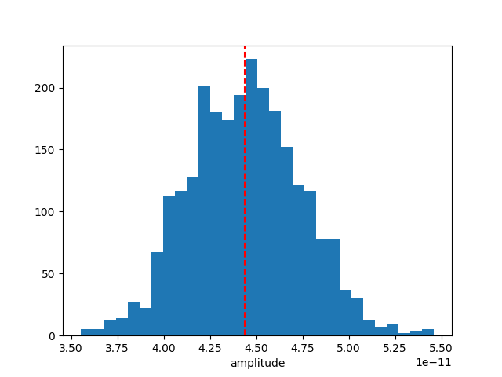

Note
Go to the end to download the full example code. or to run this example in your browser via Binder
Bayesian analysis with nested sampling#
A demonstration of a Bayesian analysis using the nested sampling technique.
Context#
1. Bayesian analysis#
Bayesian inference uses prior knowledge, in the form of a prior distribution, in order to estimate posterior probabilities which we traditionally visualise in the form of corner plots. These distributions contain more information than a maximum likelihood fit as they reveal not only the “best model” but provide a more accurate representation of errors and correlation between parameters. In particular, non-Gaussian degeneracies are complex to estimate with a maximum likelihood approach.
2. Limitations of the Markov Chain Monte Carlo approach#
A well-known approach to estimate this posterior distribution is the Markov Chain Monte Carlo (MCMC). This uses an ensemble of walkers to produce a chain of samples that after a convergence period will reach a stationary state. Once convergence is reached, the successive elements of the chain are samples of the target posterior distribution. However, the weakness of the MCMC approach lies in the “Once convergence” part. If the walkers are started far from the best likelihood region, the convergence time can be long or never reached if the walkers fall in a local minima. The choice of the initialisation point can become critical for complex models with a high number of dimensions and the ability of these walkers to escape a local minimum or to accurately describe a complex likelihood space is not guaranteed.
3. Nested sampling approach#
To overcome these issues, the nested sampling (NS) algorithm has gained traction in physics and astronomy. It is a Monte Carlo algorithm for computing an integral of the likelihood function over the prior model parameter space introduced in Skilling, 2004. The method performs this integral by evolving a collection of points through the parameter space (see recent reviews from Ashton et al., 2022, and Buchner, 2023). Without going into too many details, one important specificity of the NS method is that it starts from the entire parameter space and evolves a collection of live points to map all minima (including multiple modes if any), whereas Markov Chain Monte Carlo methods require an initialisation point and the walkers will explore the local likelihood. The ability of these walkers to escape a local minimum or to accurately describe a complex likelihood space is not guaranteed. This is a fundamental difference with MCMC or Minuit which will only ever probe the vicinity along their minimisation paths and do not have an overview of the global likelihood landscape. The analysis using the NS framework is more CPU time consuming than a standard classical fit, but it provides the full posterior distribution for all parameters, which is out of reach with traditional fitting techniques (N*(N-1)/2 contour plots to generate). In addition, it is more robust to the choice of initialisation, requires less human intervention and is therefore readily integrated in pipeline analysis. In Gammapy, we used the NS implementation of the UltraNest package (see here for more information), one of the leading package in Astronomy (already used in Cosmology and in X-rays). For a nice visualisation of the NS method see here : sampling visualisation. And for a tutorial of UltraNest applied to X-ray fitting with concrete examples and questions see : BXA Tutorial.
Note: please cite UltraNest if used for a paper
If you are using the “UltraNest” library for a paper, please follow its citation scheme: Cite UltraNest.
Proposed approach#
In this example, we will perform a Bayesian analysis with multiple 1D spectra of the Crab nebula data and investigate their posterior distributions.
Setup#
As usual, we’ll start with some setup …
import matplotlib.pyplot as plt
import numpy as np
from gammapy.datasets import Datasets
from gammapy.datasets import SpectrumDatasetOnOff
from gammapy.modeling.models import (
SkyModel,
UniformPrior,
LogUniformPrior,
)
from gammapy.modeling.sampler import Sampler
Loading the spectral datasets#
Here we will load a few Crab 1D spectral data for which we will do a fit.
path = "$GAMMAPY_DATA/joint-crab/spectra/hess/"
datasets = Datasets()
for id in ["23526", "23559", "23592"]:
dataset = SpectrumDatasetOnOff.read(f"{path}pha_obs{id}.fits")
datasets.append(dataset)
Model definition#
Now we want to define the spectral model that will be fitted to the data. The Crab spectra will be fitted here with a simple powerlaw for simplicity.
model = SkyModel.create(spectral_model="pl", name="crab")
Warning
Priors definition: Unlike a traditional fit where priors on the parameters are optional, here it is inherent to the Bayesian approach and are therefore mandatory.
In this case we will set (min,max) prior that will define the
boundaries in which the sampling will be performed.
Note that it is usually recommended to use a LogUniformPrior for
the parameters that have a large amplitude range like the
amplitude parameter.
A UniformPrior means that the samples will be drawn with uniform
probability between the (min,max) values in the linear or log space
in the case of a LogUniformPrior.
model.spectral_model.amplitude.prior = LogUniformPrior(min=1e-12, max=1e-10)
model.spectral_model.index.prior = UniformPrior(min=1, max=5)
datasets.models = [model]
print(datasets.models)
DatasetModels
Component 0: SkyModel
Name : crab
Datasets names : None
Spectral model type : PowerLawSpectralModel
Spatial model type :
Temporal model type :
Parameters:
index : 2.000 +/- 0.00
amplitude : 1.00e-12 +/- 0.0e+00 1 / (TeV s cm2)
reference (frozen): 1.000 TeV
Defining the sampler and options#
As for the Fit object, the Sampler object can receive
different backend (although just one is available for now).
The Sampler comes with “reasonable” default parameters, but you can
change them via the sampler_opts dictionary.
Here is a short description of the most relevant parameters that you
could change :
live_points: minimum number of live points throughout the run. More points allow to discover multiple peaks if existing, but is slower. To test the Prior boundaries and for debugging, a lower number (~100) can be used before a production run with more points (~400 or more).frac_remain: the cut-off condition for the integration, set by the maximum allowed fraction of posterior mass left in the live points vs the dead points. High values (e.g., 0.5) are faster and can be used if the posterior distribution is a relatively simple shape. A low value (1e-1, 1e-2) is optimal for finding peaks, but slower.log_dir: directory where the output files will be stored. If set to None, no files will be written. If set to a string, a directory will be created containing the ongoing status of the run and final results. For time consuming analysis, it is highly recommended to use that option to monitor the run and restart it in case of a crash (withresume=True).
Important note: unlike the MCMC method, you don’t need to define the number of steps for which the sampler will run. The algorithm will automatically stop once a convergence criteria has been reached.
sampler_opts = {
"live_points": 300,
"frac_remain": 0.3,
"log_dir": None,
}
sampler = Sampler(backend="ultranest", sampler_opts=sampler_opts)
Next we can run the sampler on a given dataset. No options are accepted in the run method.
[ultranest] Sampling 300 live points from prior ...
Mono-modal Volume: ~exp(-3.91) * Expected Volume: exp(0.00) Quality: ok
index : +1.0|************************************************| +5.0
amplitude: +1.0e-12|************************************** * ***** *| +1.0e-10
Z=-inf(0.00%) | Like=-2711.91..-62.61 [-2711.9096..-302.0010] | it/evals=0/301 eff=0.0000% N=300
Z=-531.5(0.00%) | Like=-525.38..-62.61 [-2711.9096..-302.0010] | it/evals=30/333 eff=90.9091% N=300
Z=-498.5(0.00%) | Like=-489.26..-62.61 [-2711.9096..-302.0010] | it/evals=56/366 eff=84.8485% N=300
Z=-491.6(0.00%) | Like=-485.40..-62.61 [-2711.9096..-302.0010] | it/evals=60/372 eff=83.3333% N=300
Mono-modal Volume: ~exp(-4.28) * Expected Volume: exp(-0.22) Quality: ok
index : +1.0|************************************************| +5.0
amplitude: +1.0e-12|************************************** * *******| +1.0e-10
Z=-484.6(0.00%) | Like=-478.88..-62.61 [-2711.9096..-302.0010] | it/evals=67/380 eff=83.7500% N=300
Z=-458.0(0.00%) | Like=-450.99..-62.61 [-2711.9096..-302.0010] | it/evals=90/406 eff=84.9057% N=300
Z=-424.9(0.00%) | Like=-416.32..-59.08 [-2711.9096..-302.0010] | it/evals=117/441 eff=82.9787% N=300
Z=-419.1(0.00%) | Like=-413.32..-59.08 [-2711.9096..-302.0010] | it/evals=120/444 eff=83.3333% N=300
Mono-modal Volume: ~exp(-4.69) * Expected Volume: exp(-0.45) Quality: ok
index : +1.0| ***********************************************| +5.0
amplitude: +1.0e-12|************************************** *********| +1.0e-10
Z=-397.8(0.00%) | Like=-390.81..-59.08 [-2711.9096..-302.0010] | it/evals=134/461 eff=83.2298% N=300
Z=-379.3(0.00%) | Like=-373.14..-59.08 [-2711.9096..-302.0010] | it/evals=150/480 eff=83.3333% N=300
Z=-340.3(0.00%) | Like=-333.91..-59.08 [-2711.9096..-302.0010] | it/evals=180/515 eff=83.7209% N=300
Mono-modal Volume: ~exp(-4.92) * Expected Volume: exp(-0.67) Quality: ok
index : +1.0| *********************************************| +5.0
amplitude: +1.0e-12| ***********************************************| +1.0e-10
Z=-320.6(0.00%) | Like=-314.46..-59.08 [-2711.9096..-302.0010] | it/evals=201/542 eff=83.0579% N=300
Z=-308.9(0.00%) | Like=-303.18..-59.08 [-2711.9096..-302.0010] | it/evals=210/552 eff=83.3333% N=300
Z=-289.2(0.00%) | Like=-283.74..-59.08 [-301.9390..-175.4382] | it/evals=240/585 eff=84.2105% N=300
Mono-modal Volume: ~exp(-4.92) Expected Volume: exp(-0.89) Quality: ok
index : +1.0| ******************************************| +5.0
amplitude: +1.0e-12| **********************************************| +1.0e-10
Z=-265.2(0.00%) | Like=-259.15..-59.08 [-301.9390..-175.4382] | it/evals=268/619 eff=84.0125% N=300
Z=-264.1(0.00%) | Like=-256.46..-59.08 [-301.9390..-175.4382] | it/evals=270/622 eff=83.8509% N=300
Z=-244.4(0.00%) | Like=-238.29..-59.08 [-301.9390..-175.4382] | it/evals=298/656 eff=83.7079% N=300
Z=-243.6(0.00%) | Like=-237.65..-59.08 [-301.9390..-175.4382] | it/evals=300/658 eff=83.7989% N=300
Z=-227.9(0.00%) | Like=-221.70..-58.89 [-301.9390..-175.4382] | it/evals=326/692 eff=83.1633% N=300
Z=-225.6(0.00%) | Like=-219.96..-58.89 [-301.9390..-175.4382] | it/evals=330/696 eff=83.3333% N=300
Mono-modal Volume: ~exp(-5.26) * Expected Volume: exp(-1.12) Quality: ok
index : +1.0| ******************************************| +5.0
amplitude: +1.0e-12| ************************************ *******| +1.0e-10
Z=-224.3(0.00%) | Like=-218.75..-58.89 [-301.9390..-175.4382] | it/evals=335/703 eff=83.1266% N=300
Z=-211.7(0.00%) | Like=-205.82..-58.89 [-301.9390..-175.4382] | it/evals=360/734 eff=82.9493% N=300
Z=-198.7(0.00%) | Like=-192.27..-58.89 [-301.9390..-175.4382] | it/evals=387/768 eff=82.6923% N=300
Z=-197.6(0.00%) | Like=-191.76..-58.89 [-301.9390..-175.4382] | it/evals=390/771 eff=82.8025% N=300
Mono-modal Volume: ~exp(-5.27) * Expected Volume: exp(-1.34) Quality: ok
index : +1.0| *************************************** | +5.0
amplitude: +1.0e-12| *********************************** ***** *| +1.0e-10
Z=-194.5(0.00%) | Like=-189.05..-58.89 [-301.9390..-175.4382] | it/evals=402/785 eff=82.8866% N=300
Z=-186.9(0.00%) | Like=-180.42..-58.89 [-301.9390..-175.4382] | it/evals=420/815 eff=81.5534% N=300
Z=-178.6(0.00%) | Like=-172.24..-58.89 [-175.4086..-124.7304] | it/evals=443/849 eff=80.6922% N=300
Z=-175.5(0.00%) | Like=-169.35..-58.89 [-175.4086..-124.7304] | it/evals=450/859 eff=80.5009% N=300
Mono-modal Volume: ~exp(-5.46) * Expected Volume: exp(-1.56) Quality: ok
index : +1.0| *********************************** | +5.0
amplitude: +1.0e-12| ******************************************| +1.0e-10
Z=-170.7(0.00%) | Like=-165.01..-58.89 [-175.4086..-124.7304] | it/evals=469/884 eff=80.3082% N=300
Z=-167.8(0.00%) | Like=-161.47..-58.89 [-175.4086..-124.7304] | it/evals=480/898 eff=80.2676% N=300
Z=-160.3(0.00%) | Like=-154.54..-58.89 [-175.4086..-124.7304] | it/evals=506/933 eff=79.9368% N=300
Z=-159.6(0.00%) | Like=-153.56..-58.89 [-175.4086..-124.7304] | it/evals=510/938 eff=79.9373% N=300
Z=-151.9(0.00%) | Like=-145.69..-58.89 [-175.4086..-124.7304] | it/evals=533/973 eff=79.1976% N=300
Mono-modal Volume: ~exp(-6.02) * Expected Volume: exp(-1.79) Quality: ok
index : +1.0| ****************************** | +5.0
amplitude: +1.0e-12| ************************************ *** | +1.0e-10
Z=-151.3(0.00%) | Like=-145.48..-58.89 [-175.4086..-124.7304] | it/evals=536/977 eff=79.1728% N=300
Z=-150.7(0.00%) | Like=-145.27..-58.89 [-175.4086..-124.7304] | it/evals=540/981 eff=79.2952% N=300
Z=-145.0(0.00%) | Like=-138.70..-58.89 [-175.4086..-124.7304] | it/evals=565/1016 eff=78.9106% N=300
Z=-143.8(0.00%) | Like=-137.46..-58.89 [-175.4086..-124.7304] | it/evals=570/1021 eff=79.0569% N=300
Z=-139.1(0.00%) | Like=-132.71..-58.89 [-175.4086..-124.7304] | it/evals=598/1056 eff=79.1005% N=300
Z=-138.7(0.00%) | Like=-132.51..-58.89 [-175.4086..-124.7304] | it/evals=600/1061 eff=78.8436% N=300
Mono-modal Volume: ~exp(-6.02) Expected Volume: exp(-2.01) Quality: ok
index : +1.0| *************************** +4.0 | +5.0
amplitude: +1.0e-12| *********************************** | +1.0e-10
Z=-135.3(0.00%) | Like=-129.21..-58.89 [-175.4086..-124.7304] | it/evals=622/1093 eff=78.4363% N=300
Z=-133.6(0.00%) | Like=-127.37..-58.89 [-175.4086..-124.7304] | it/evals=630/1104 eff=78.3582% N=300
Z=-129.6(0.00%) | Like=-123.29..-58.89 [-124.6525..-92.7335] | it/evals=652/1129 eff=78.6490% N=300
Z=-127.8(0.00%) | Like=-121.61..-58.89 [-124.6525..-92.7335] | it/evals=660/1140 eff=78.5714% N=300
Mono-modal Volume: ~exp(-6.24) * Expected Volume: exp(-2.23) Quality: ok
index : +1.0| ************************* +3.9 | +5.0
amplitude: +1.0e-12| ********************************* | +1.0e-10
Z=-125.9(0.00%) | Like=-119.44..-58.89 [-124.6525..-92.7335] | it/evals=670/1154 eff=78.4543% N=300
Z=-121.6(0.00%) | Like=-114.80..-58.89 [-124.6525..-92.7335] | it/evals=690/1187 eff=77.7903% N=300
Z=-116.7(0.00%) | Like=-110.56..-58.89 [-124.6525..-92.7335] | it/evals=715/1223 eff=77.4648% N=300
Z=-116.0(0.00%) | Like=-109.58..-58.89 [-124.6525..-92.7335] | it/evals=720/1229 eff=77.5027% N=300
Mono-modal Volume: ~exp(-6.71) * Expected Volume: exp(-2.46) Quality: ok
index : +1.0| +2.0 ********************* +3.7 | +5.0
amplitude: +1.0e-12| ****************************** | +1.0e-10
Z=-113.0(0.00%) | Like=-106.35..-58.89 [-124.6525..-92.7335] | it/evals=737/1258 eff=76.9311% N=300
Z=-110.9(0.00%) | Like=-104.64..-58.89 [-124.6525..-92.7335] | it/evals=750/1275 eff=76.9231% N=300
Z=-108.3(0.00%) | Like=-101.89..-58.89 [-124.6525..-92.7335] | it/evals=770/1311 eff=76.1622% N=300
Z=-107.0(0.00%) | Like=-100.62..-58.89 [-124.6525..-92.7335] | it/evals=780/1324 eff=76.1719% N=300
Mono-modal Volume: ~exp(-6.71) Expected Volume: exp(-2.68) Quality: ok
index : +1.0| +2.0 ******************* +3.6 | +5.0
amplitude: +1.0e-12| ************************** +7.5e-11 | +1.0e-10
Z=-103.5(0.00%) | Like=-97.13..-58.89 [-124.6525..-92.7335] | it/evals=807/1358 eff=76.2760% N=300
Z=-103.1(0.00%) | Like=-96.74..-58.89 [-124.6525..-92.7335] | it/evals=810/1361 eff=76.3431% N=300
Z=-99.9(0.00%) | Like=-93.40..-58.89 [-124.6525..-92.7335] | it/evals=836/1397 eff=76.2078% N=300
Z=-99.4(0.00%) | Like=-92.81..-58.89 [-124.6525..-92.7335] | it/evals=840/1404 eff=76.0870% N=300
Z=-96.3(0.00%) | Like=-89.96..-58.89 [-92.6556..-76.2405] | it/evals=864/1441 eff=75.7230% N=300
Z=-95.7(0.00%) | Like=-89.45..-58.89 [-92.6556..-76.2405] | it/evals=870/1450 eff=75.6522% N=300
Mono-modal Volume: ~exp(-6.85) * Expected Volume: exp(-2.90) Quality: ok
index : +1.0| +2.1 ***************** +3.4 | +5.0
amplitude: +1.0e-12| +2.5e-11 ************************ +7.2e-11 | +1.0e-10
Z=-95.6(0.00%) | Like=-89.36..-58.89 [-92.6556..-76.2405] | it/evals=871/1451 eff=75.6733% N=300
Z=-93.1(0.00%) | Like=-86.73..-58.89 [-92.6556..-76.2405] | it/evals=897/1486 eff=75.6324% N=300
Z=-92.8(0.00%) | Like=-86.59..-58.89 [-92.6556..-76.2405] | it/evals=900/1489 eff=75.6939% N=300
Z=-90.7(0.00%) | Like=-84.38..-58.89 [-92.6556..-76.2405] | it/evals=929/1523 eff=75.9608% N=300
Z=-90.6(0.00%) | Like=-84.31..-58.89 [-92.6556..-76.2405] | it/evals=930/1524 eff=75.9804% N=300
Mono-modal Volume: ~exp(-7.06) * Expected Volume: exp(-3.13) Quality: ok
index : +1.0| +2.2 **************** +3.3 | +5.0
amplitude: +1.0e-12| +2.7e-11 ********************* +6.8e-11 | +1.0e-10
Z=-90.0(0.00%) | Like=-83.68..-58.89 [-92.6556..-76.2405] | it/evals=938/1537 eff=75.8286% N=300
Z=-88.6(0.00%) | Like=-82.40..-58.89 [-92.6556..-76.2405] | it/evals=960/1567 eff=75.7695% N=300
Z=-86.8(0.00%) | Like=-80.42..-58.89 [-92.6556..-76.2405] | it/evals=986/1598 eff=75.9630% N=300
Z=-86.5(0.00%) | Like=-80.37..-58.89 [-92.6556..-76.2405] | it/evals=990/1603 eff=75.9785% N=300
Mono-modal Volume: ~exp(-7.19) * Expected Volume: exp(-3.35) Quality: ok
index : +1.0| +2.2 ************** +3.3 | +5.0
amplitude: +1.0e-12| +2.8e-11 ******************** +6.6e-11 | +1.0e-10
Z=-85.5(0.00%) | Like=-79.15..-58.89 [-92.6556..-76.2405] | it/evals=1005/1626 eff=75.7919% N=300
Z=-84.5(0.00%) | Like=-77.89..-58.89 [-92.6556..-76.2405] | it/evals=1020/1642 eff=76.0060% N=300
Z=-83.1(0.00%) | Like=-76.88..-58.89 [-92.6556..-76.2405] | it/evals=1045/1676 eff=75.9448% N=300
Z=-82.8(0.00%) | Like=-76.70..-58.89 [-92.6556..-76.2405] | it/evals=1050/1681 eff=76.0319% N=300
Mono-modal Volume: ~exp(-7.80) * Expected Volume: exp(-3.57) Quality: ok
index : +1.0| +2.2 ************* +3.2 | +5.0
amplitude: +1.0e-12| +2.9e-11 ****************** +6.4e-11 | +1.0e-10
Z=-81.6(0.00%) | Like=-75.21..-58.89 [-76.1952..-68.3928] | it/evals=1072/1707 eff=76.1905% N=300
Z=-81.1(0.00%) | Like=-74.69..-58.89 [-76.1952..-68.3928] | it/evals=1080/1720 eff=76.0563% N=300
Z=-79.9(0.00%) | Like=-73.77..-58.76 [-76.1952..-68.3928] | it/evals=1109/1756 eff=76.1676% N=300
Z=-79.8(0.00%) | Like=-73.76..-58.76 [-76.1952..-68.3928] | it/evals=1110/1757 eff=76.1839% N=300
Z=-79.1(0.00%) | Like=-72.83..-58.75 [-76.1952..-68.3928] | it/evals=1132/1791 eff=75.9222% N=300
Mono-modal Volume: ~exp(-7.84) * Expected Volume: exp(-3.80) Quality: ok
index : +1.0| +2.3 *********** +3.1 | +5.0
amplitude: +1.0e-12| +3.1e-11 **************** +6.1e-11 | +1.0e-10
Z=-78.8(0.00%) | Like=-72.74..-58.75 [-76.1952..-68.3928] | it/evals=1139/1803 eff=75.7818% N=300
Z=-78.8(0.00%) | Like=-72.72..-58.75 [-76.1952..-68.3928] | it/evals=1140/1805 eff=75.7475% N=300
Z=-78.0(0.00%) | Like=-71.64..-58.75 [-76.1952..-68.3928] | it/evals=1164/1839 eff=75.6335% N=300
Z=-77.7(0.00%) | Like=-71.46..-58.75 [-76.1952..-68.3928] | it/evals=1170/1846 eff=75.6792% N=300
Z=-77.0(0.00%) | Like=-70.75..-58.75 [-76.1952..-68.3928] | it/evals=1192/1876 eff=75.6345% N=300
Z=-76.7(0.00%) | Like=-70.45..-58.75 [-76.1952..-68.3928] | it/evals=1200/1885 eff=75.7098% N=300
Mono-modal Volume: ~exp(-7.96) * Expected Volume: exp(-4.02) Quality: ok
index : +1.0| +2.3 *********** +3.1 | +5.0
amplitude: +1.0e-12| +3.1e-11 *************** +6.0e-11 | +1.0e-10
Z=-76.5(0.00%) | Like=-70.26..-58.75 [-76.1952..-68.3928] | it/evals=1206/1892 eff=75.7538% N=300
Z=-75.8(0.00%) | Like=-69.44..-58.75 [-76.1952..-68.3928] | it/evals=1228/1921 eff=75.7557% N=300
Z=-75.8(0.00%) | Like=-69.32..-58.75 [-76.1952..-68.3928] | it/evals=1230/1923 eff=75.7856% N=300
Z=-75.0(0.01%) | Like=-68.59..-58.75 [-76.1952..-68.3928] | it/evals=1252/1953 eff=75.7411% N=300
Z=-74.8(0.01%) | Like=-68.32..-58.75 [-68.3707..-65.4881] | it/evals=1260/1963 eff=75.7667% N=300
Mono-modal Volume: ~exp(-8.39) * Expected Volume: exp(-4.24) Quality: ok
index : +1.0| +2.3 ********* +3.1 | +5.0
amplitude: +1.0e-12| +3.3e-11 ************* +5.8e-11 | +1.0e-10
Z=-74.4(0.01%) | Like=-68.05..-58.75 [-68.3707..-65.4881] | it/evals=1273/1985 eff=75.5490% N=300
Z=-74.0(0.02%) | Like=-67.69..-58.75 [-68.3707..-65.4881] | it/evals=1290/2009 eff=75.4827% N=300
Z=-73.3(0.03%) | Like=-66.83..-58.75 [-68.3707..-65.4881] | it/evals=1316/2046 eff=75.3723% N=300
Z=-73.2(0.03%) | Like=-66.70..-58.75 [-68.3707..-65.4881] | it/evals=1320/2054 eff=75.2566% N=300
Mono-modal Volume: ~exp(-8.39) Expected Volume: exp(-4.47) Quality: ok
index : +1.0| +2.4 ********* +3.0 | +5.0
amplitude: +1.0e-12| +3.4e-11 ************* +5.7e-11 | +1.0e-10
Z=-72.6(0.06%) | Like=-66.09..-58.75 [-68.3707..-65.4881] | it/evals=1344/2087 eff=75.2098% N=300
Z=-72.4(0.07%) | Like=-65.87..-58.75 [-68.3707..-65.4881] | it/evals=1350/2094 eff=75.2508% N=300
Z=-72.1(0.11%) | Like=-65.59..-58.75 [-68.3707..-65.4881] | it/evals=1366/2124 eff=74.8904% N=300
Z=-71.7(0.15%) | Like=-65.24..-58.75 [-65.4690..-65.1866] | it/evals=1380/2141 eff=74.9593% N=300
Z=-71.2(0.25%) | Like=-64.83..-58.75 [-64.8332..-64.7480] | it/evals=1405/2176 eff=74.8934% N=300
Mono-modal Volume: ~exp(-8.39) Expected Volume: exp(-4.69) Quality: ok
index : +1.0| +2.4 ******** +3.0 | +5.0
amplitude: +1.0e-12| +3.5e-11 *********** +5.6e-11 | +1.0e-10
Z=-71.1(0.28%) | Like=-64.70..-58.75 [-64.6990..-64.6889] | it/evals=1410/2183 eff=74.8805% N=300
Z=-70.8(0.41%) | Like=-64.27..-58.75 [-64.2651..-64.2414] | it/evals=1430/2218 eff=74.5568% N=300
Z=-70.6(0.50%) | Like=-64.09..-58.75 [-64.1084..-64.0942] | it/evals=1440/2235 eff=74.4186% N=300
Z=-70.2(0.72%) | Like=-63.72..-58.75 [-63.7618..-63.7230] | it/evals=1463/2269 eff=74.3017% N=300
Z=-70.1(0.79%) | Like=-63.58..-58.75 [-63.5809..-63.5702] | it/evals=1470/2277 eff=74.3551% N=300
Mono-modal Volume: ~exp(-8.81) * Expected Volume: exp(-4.91) Quality: ok
index : +1.0| +2.4 ******* +2.9 | +5.0
amplitude: +1.0e-12| +3.6e-11 ********** +5.4e-11 | +1.0e-10
Z=-70.0(0.86%) | Like=-63.50..-58.75 [-63.5048..-63.4867] | it/evals=1474/2285 eff=74.2569% N=300
Z=-69.6(1.26%) | Like=-63.20..-58.75 [-63.2237..-63.1961] | it/evals=1498/2316 eff=74.3056% N=300
Z=-69.6(1.31%) | Like=-63.17..-58.75 [-63.1668..-63.1620]*| it/evals=1500/2318 eff=74.3310% N=300
Z=-69.3(1.85%) | Like=-62.83..-58.75 [-62.8258..-62.8245]*| it/evals=1527/2352 eff=74.4152% N=300
Z=-69.2(1.90%) | Like=-62.81..-58.75 [-62.8111..-62.8065]*| it/evals=1530/2355 eff=74.4526% N=300
Mono-modal Volume: ~exp(-8.81) Expected Volume: exp(-5.14) Quality: ok
index : +1.0| +2.4 ****** +2.9 | +5.0
amplitude: +1.0e-12| +3.7e-11 ********* +5.3e-11 | +1.0e-10
Z=-68.9(2.64%) | Like=-62.39..-58.75 [-62.3928..-62.3891]*| it/evals=1555/2388 eff=74.4732% N=300
Z=-68.9(2.80%) | Like=-62.36..-58.75 [-62.3783..-62.3627] | it/evals=1560/2395 eff=74.4630% N=300
Z=-68.6(3.73%) | Like=-62.12..-58.75 [-62.1243..-62.1053] | it/evals=1584/2429 eff=74.4011% N=300
Z=-68.5(4.01%) | Like=-62.08..-58.75 [-62.0843..-62.0767]*| it/evals=1590/2438 eff=74.3686% N=300
Mono-modal Volume: ~exp(-9.13) * Expected Volume: exp(-5.36) Quality: ok
index : +1.0| +2.5 ****** +2.9 | +5.0
amplitude: +1.0e-12| +3.7e-11 ******** +5.2e-11 | +1.0e-10
Z=-68.3(4.80%) | Like=-61.93..-58.75 [-61.9323..-61.9252]*| it/evals=1608/2462 eff=74.3756% N=300
Z=-68.2(5.36%) | Like=-61.79..-58.75 [-61.7853..-61.7765]*| it/evals=1620/2480 eff=74.3119% N=300
Z=-68.0(6.78%) | Like=-61.55..-58.75 [-61.5500..-61.5485]*| it/evals=1647/2515 eff=74.3567% N=300
Z=-68.0(6.98%) | Like=-61.54..-58.75 [-61.5359..-61.5219] | it/evals=1650/2518 eff=74.3913% N=300
Mono-modal Volume: ~exp(-9.66) * Expected Volume: exp(-5.58) Quality: ok
index : +1.0| +2.5 ****** +2.9 | +5.0
amplitude: +1.0e-12| +3.8e-11 ******** +5.1e-11 | +1.0e-10
Z=-67.8(8.55%) | Like=-61.31..-58.75 [-61.3135..-61.3033] | it/evals=1675/2543 eff=74.6768% N=300
Z=-67.7(8.89%) | Like=-61.28..-58.75 [-61.2873..-61.2754] | it/evals=1680/2549 eff=74.6999% N=300
Z=-67.5(10.80%) | Like=-61.08..-58.75 [-61.0812..-61.0733]*| it/evals=1707/2582 eff=74.8028% N=300
Z=-67.5(11.06%) | Like=-61.07..-58.75 [-61.0721..-61.0690]*| it/evals=1710/2585 eff=74.8359% N=300
Z=-67.3(12.83%) | Like=-60.92..-58.75 [-60.9231..-60.9157]*| it/evals=1734/2622 eff=74.6770% N=300
Z=-67.3(13.26%) | Like=-60.88..-58.75 [-60.8826..-60.8751]*| it/evals=1740/2632 eff=74.6141% N=300
Mono-modal Volume: ~exp(-9.87) * Expected Volume: exp(-5.81) Quality: ok
index : +1.0| +2.5 ***** +2.8 | +5.0
amplitude: +1.0e-12| +3.9e-11 ****** +5.0e-11 | +1.0e-10
Z=-67.3(13.42%) | Like=-60.87..-58.75 [-60.8715..-60.8584] | it/evals=1742/2634 eff=74.6358% N=300
Z=-67.1(15.77%) | Like=-60.69..-58.75 [-60.6919..-60.6791] | it/evals=1770/2663 eff=74.9048% N=300
Z=-67.0(18.18%) | Like=-60.52..-58.75 [-60.5320..-60.5178] | it/evals=1795/2694 eff=74.9791% N=300
Z=-67.0(18.71%) | Like=-60.48..-58.75 [-60.4759..-60.4614] | it/evals=1800/2699 eff=75.0313% N=300
Mono-modal Volume: ~exp(-10.20) * Expected Volume: exp(-6.03) Quality: ok
index : +1.0| +2.5 **** +2.8 | +5.0
amplitude: +1.0e-12| +3.9e-11 ****** +5.0e-11 | +1.0e-10
Z=-66.9(19.63%) | Like=-60.40..-58.75 [-60.3994..-60.3946]*| it/evals=1809/2712 eff=75.0000% N=300
Z=-66.8(21.78%) | Like=-60.29..-58.75 [-60.2855..-60.2836]*| it/evals=1830/2734 eff=75.1849% N=300
Z=-66.7(24.65%) | Like=-60.17..-58.75 [-60.1694..-60.1672]*| it/evals=1854/2762 eff=75.3046% N=300
Z=-66.7(25.39%) | Like=-60.15..-58.75 [-60.1490..-60.1457]*| it/evals=1860/2770 eff=75.3036% N=300
Mono-modal Volume: ~exp(-10.30) * Expected Volume: exp(-6.25) Quality: ok
index : +1.0| +2.5 **** +2.8 | +5.0
amplitude: +1.0e-12| +4.0e-11 ****** +4.9e-11 | +1.0e-10
Z=-66.6(27.28%) | Like=-60.07..-58.75 [-60.0651..-60.0628]*| it/evals=1876/2788 eff=75.4019% N=300
Z=-66.5(28.92%) | Like=-60.01..-58.75 [-60.0101..-60.0063]*| it/evals=1890/2808 eff=75.3589% N=300
Z=-66.4(31.69%) | Like=-59.94..-58.75 [-59.9357..-59.9357]*| it/evals=1913/2839 eff=75.3446% N=300
Z=-66.4(32.50%) | Like=-59.92..-58.75 [-59.9179..-59.9134]*| it/evals=1920/2849 eff=75.3237% N=300
Z=-66.3(34.74%) | Like=-59.81..-58.75 [-59.8113..-59.8037]*| it/evals=1940/2881 eff=75.1647% N=300
Mono-modal Volume: ~exp(-10.36) * Expected Volume: exp(-6.48) Quality: ok
index : +1.0| +2.6 **** +2.8 | +5.0
amplitude: +1.0e-12| +4.0e-11 ****** +4.9e-11 | +1.0e-10
Z=-66.3(35.14%) | Like=-59.80..-58.75 [-59.8025..-59.7886] | it/evals=1943/2886 eff=75.1353% N=300
Z=-66.3(36.00%) | Like=-59.77..-58.75 [-59.7674..-59.7649]*| it/evals=1950/2895 eff=75.1445% N=300
Z=-66.2(39.05%) | Like=-59.69..-58.75 [-59.6909..-59.6895]*| it/evals=1976/2931 eff=75.1045% N=300
Z=-66.2(39.49%) | Like=-59.68..-58.75 [-59.6833..-59.6805]*| it/evals=1980/2937 eff=75.0853% N=300
Z=-66.1(42.86%) | Like=-59.60..-58.75 [-59.5994..-59.5992]*| it/evals=2008/2972 eff=75.1497% N=300
Mono-modal Volume: ~exp(-10.58) * Expected Volume: exp(-6.70) Quality: ok
index : +1.0| +2.6 **** +2.8 | +5.0
amplitude: +1.0e-12| +4.1e-11 **** +4.8e-11 | +1.0e-10
Z=-66.1(43.06%) | Like=-59.60..-58.75 [-59.5987..-59.5986]*| it/evals=2010/2975 eff=75.1402% N=300
Z=-66.0(46.42%) | Like=-59.51..-58.75 [-59.5112..-59.5106]*| it/evals=2038/3012 eff=75.1475% N=300
Z=-66.0(46.64%) | Like=-59.51..-58.75 [-59.5085..-59.5074]*| it/evals=2040/3014 eff=75.1658% N=300
Z=-66.0(49.94%) | Like=-59.42..-58.75 [-59.4225..-59.4202]*| it/evals=2068/3049 eff=75.2274% N=300
Z=-66.0(50.18%) | Like=-59.42..-58.75 [-59.4182..-59.4167]*| it/evals=2070/3051 eff=75.2454% N=300
Mono-modal Volume: ~exp(-10.70) * Expected Volume: exp(-6.92) Quality: ok
index : +1.0| +2.6 **** +2.8 | +5.0
amplitude: +1.0e-12| +4.1e-11 **** +4.8e-11 | +1.0e-10
Z=-66.0(51.02%) | Like=-59.41..-58.75 [-59.4096..-59.4087]*| it/evals=2077/3061 eff=75.2264% N=300
Z=-65.9(53.16%) | Like=-59.38..-58.75 [-59.3837..-59.3792]*| it/evals=2096/3090 eff=75.1254% N=300
Z=-65.9(53.55%) | Like=-59.38..-58.75 [-59.3757..-59.3734]*| it/evals=2100/3098 eff=75.0536% N=300
Z=-65.8(56.36%) | Like=-59.31..-58.75 [-59.3081..-59.3027]*| it/evals=2126/3131 eff=75.0971% N=300
Z=-65.8(56.85%) | Like=-59.29..-58.75 [-59.2925..-59.2914]*| it/evals=2130/3135 eff=75.1323% N=300
Mono-modal Volume: ~exp(-10.89) * Expected Volume: exp(-7.15) Quality: ok
index : +1.0| +2.6 **** +2.8 | +5.0
amplitude: +1.0e-12| +4.1e-11 **** +4.8e-11 | +1.0e-10
Z=-65.8(58.37%) | Like=-59.28..-58.75 [-59.2770..-59.2754]*| it/evals=2144/3156 eff=75.0700% N=300
Z=-65.8(60.12%) | Like=-59.25..-58.75 [-59.2497..-59.2485]*| it/evals=2160/3176 eff=75.1043% N=300
Z=-65.7(62.46%) | Like=-59.21..-58.75 [-59.2057..-59.2037]*| it/evals=2184/3213 eff=74.9743% N=300
Z=-65.7(63.03%) | Like=-59.20..-58.75 [-59.1976..-59.1968]*| it/evals=2190/3219 eff=75.0257% N=300
Mono-modal Volume: ~exp(-11.19) * Expected Volume: exp(-7.37) Quality: ok
index : +1.0| +2.6 ** +2.7 | +5.0
amplitude: +1.0e-12| +4.2e-11 **** +4.7e-11 | +1.0e-10
Z=-65.7(65.01%) | Like=-59.17..-58.75 [-59.1654..-59.1643]*| it/evals=2211/3250 eff=74.9492% N=300
Z=-65.7(65.82%) | Like=-59.16..-58.75 [-59.1552..-59.1533]*| it/evals=2220/3259 eff=75.0253% N=300
Z=-65.7(68.01%) | Like=-59.12..-58.75 [-59.1195..-59.1189]*| it/evals=2244/3292 eff=75.0000% N=300
Z=-65.7(68.53%) | Like=-59.11..-58.75 [-59.1108..-59.1102]*| it/evals=2250/3299 eff=75.0250% N=300
[ultranest] Explored until L=-6e+01
[ultranest] Likelihood function evaluations: 3319
[ultranest] logZ = -65.25 +- 0.1061
[ultranest] Effective samples strategy satisfied (ESS = 1008.2, need >400)
[ultranest] Posterior uncertainty strategy is satisfied (KL: 0.46+-0.08 nat, need <0.50 nat)
[ultranest] Evidency uncertainty strategy is satisfied (dlogz=0.28, need <0.5)
[ultranest] logZ error budget: single: 0.14 bs:0.11 tail:0.26 total:0.28 required:<0.50
[ultranest] done iterating.
logZ = -65.275 +- 0.331
single instance: logZ = -65.275 +- 0.135
bootstrapped : logZ = -65.254 +- 0.202
tail : logZ = +- 0.262
insert order U test : converged: True correlation: inf iterations
index : 2.382 │ ▁▁▁▁▁▁▁▂▃▃▄▄▅▅▇▇▇▇▇▆▄▄▄▃▁▂▁▁▁▁▁▁▁ ▁ │3.043 2.674 +- 0.084
amplitude : 0.0000000000337│ ▁ ▁▁▁▁▂▂▂▄▅▅▇▇▅▇▆▆▅▄▄▃▂▁▁▁▁▁▁▁ ▁ ▁ │0.0000000000595 0.0000000000443 +- 0.0000000000031
Understanding the outputs#
In the Jupyter notebook, you should be able to see an interactive visualisation of how the parameter space shrinks which starts from the (min,max) shrinks down towards the optimal parameters.
The output above is filled with interesting information. Here we provide a short description of the most relevant information provided above. For more detailed information see the UltraNest docs.
During the sampling
Z=-68.8(0.53%) | Like=-63.96..-58.75 [-63.9570..-63.9539]*| it/evals=640/1068 eff=73.7327% N=300
Some important information here is:
Progress (0.53%): the completed fraction of the integral. This is not a time progress bar. Stays at zero for a good fraction of the run.
Efficiency (eff value) of the sampling: this indicates out of the proposed new points, how many were accepted. If your efficiency is too small (<<1%), maybe you should revise your priors (e.g use a LogUniform prior for the normalisation).
Final outputs
The final lines indicate that all three “convergence” strategies are satisfied (samples, posterior uncertainty, and evidence uncertainty).
logZ = -65.104 +- 0.292
The main goal of the Nested sampling algorithm is to estimate Z (the Bayesian evidence) which is given above together with an uncertainty. In a similar way to deltaLogLike and deltaAIC, deltaLogZ values can be used for model comparison. For more information see : on the use of the evidence for model comparison. An interesting comparison of the efficiency and false discovery rate of model selection with deltaLogLike and deltaLogZ is given in Appendix C of Buchner et al., 2014.
Results stored on disk
if log_dir is set to a name where the results will be stored, then
a directory is created containing many useful results and plots.
A description of these outputs is given in the Ultranest
docs.
Results#
Within a Bayesian analysis, the concept of best-fit has to be viewed differently from what is done in a gradient descent fit.
The output of the Bayesian analysis is the posterior distribution and there is no “best-fit” output. One has to define, based on the posteriors, what we want to consider as “best-fit” and several options are possible:
the mean of the distribution
the median
the lowest likelihood value
By default the DatasetModels will be updated with the mean of
the posterior distributions.
print(result_joint.models)
DatasetModels
Component 0: SkyModel
Name : crab
Datasets names : None
Spectral model type : PowerLawSpectralModel
Spatial model type :
Temporal model type :
Parameters:
index : 2.674 +/- 0.08
amplitude : 4.43e-11 +/- 3.1e-12 1 / (TeV s cm2)
reference (frozen): 1.000 TeV
The Sampler class returns a very rich dictionary.
The most “standard” information about the posterior distributions can
be found in :
print(result_joint.sampler_results["posterior"])
{'mean': [2.673859556979851, 4.4264537246051244e-11], 'stdev': [0.08441847310834509, 3.0594225671808638e-12], 'median': [2.6742133296321775, 4.424115134485062e-11], 'errlo': [2.586820417516199, 4.1261325094684286e-11], 'errup': [2.757725146791755, 4.7496341658336576e-11], 'information_gain_bits': [2.6951487154039913, 3.0990332391578943]}
Besides mean, errors, etc, an interesting value is the
information gain which estimates how much the posterior
distribution has shrinked with respect to the prior (i.e. how much
we’ve learned). A value < 1 means that the parameter is poorly
constrained within the prior range (we haven’t learned much with respect to our prior assumption).
For a physical example see this
example.
The SamplerResult dictionary contains also other interesting
information :
print(result_joint.sampler_results.keys())
dict_keys(['niter', 'logz', 'logzerr', 'logz_bs', 'logz_single', 'logzerr_tail', 'logzerr_bs', 'ess', 'H', 'Herr', 'posterior', 'weighted_samples', 'samples', 'maximum_likelihood', 'ncall', 'paramnames', 'logzerr_single', 'insertion_order_MWW_test'])
Of particular interest, the samples used in the process to approximate the posterior distribution can be accessed via :
for i, n in enumerate(model.parameters.free_parameters.names):
s = result_joint.samples[:, i]
fig, ax = plt.subplots()
ax.hist(s, bins=30)
ax.axvline(np.mean(s), ls="--", color="red")
ax.set_xlabel(n)
plt.show()

- 
While the above plots are interesting, the real strength of the Bayesian analysis is to visualise all parameters correlations which is usually done using “corner plots”. Ultranest corner plot function is a wrapper around the corner package. See the above link for optional keywords. Other packages exist for corner plots, like chainconsumer which is discussed later in this tutorial.
from ultranest.plot import cornerplot
cornerplot(
result_joint.sampler_results,
plot_datapoints=True,
plot_density=True,
bins=20,
title_fmt=".2e",
smooth=False,
)
plt.show()

Individual run analysis#
Now we’ll analyse several Crab runs individually so that we can compare them.
result_0 = sampler.run(datasets[0])
result_1 = sampler.run(datasets[1])
result_2 = sampler.run(datasets[2])
[ultranest] Sampling 300 live points from prior ...
Mono-modal Volume: ~exp(-3.92) * Expected Volume: exp(0.00) Quality: ok
index : +1.0|************************************************| +5.0
amplitude: +1.0e-12|************************************* ********* | +1.0e-10
Z=-inf(0.00%) | Like=-1507.55..-21.19 [-1507.5541..-110.7272] | it/evals=0/301 eff=0.0000% N=300
Z=-188.3(0.00%) | Like=-176.67..-21.19 [-1507.5541..-110.7272] | it/evals=30/332 eff=93.7500% N=300
Z=-169.3(0.00%) | Like=-164.06..-21.19 [-1507.5541..-110.7272] | it/evals=60/365 eff=92.3077% N=300
Mono-modal Volume: ~exp(-4.10) * Expected Volume: exp(-0.22) Quality: ok
index : +1.0|******* ****************************************| +5.0
amplitude: +1.0e-12|***************** **** *************************| +1.0e-10
Z=-165.6(0.00%) | Like=-160.49..-21.19 [-1507.5541..-110.7272] | it/evals=67/374 eff=90.5405% N=300
Z=-158.4(0.00%) | Like=-153.21..-21.19 [-1507.5541..-110.7272] | it/evals=90/402 eff=88.2353% N=300
Z=-148.8(0.00%) | Like=-144.03..-21.19 [-1507.5541..-110.7272] | it/evals=120/436 eff=88.2353% N=300
Mono-modal Volume: ~exp(-4.10) Expected Volume: exp(-0.45) Quality: ok
index : +1.0|* ******** *************************************| +5.0
amplitude: +1.0e-12|********************** *************************| +1.0e-10
Z=-139.3(0.00%) | Like=-133.43..-21.19 [-1507.5541..-110.7272] | it/evals=150/473 eff=86.7052% N=300
Z=-127.4(0.00%) | Like=-122.50..-21.19 [-1507.5541..-110.7272] | it/evals=180/514 eff=84.1121% N=300
Mono-modal Volume: ~exp(-4.38) * Expected Volume: exp(-0.67) Quality: ok
index : +1.0| *********************************************| +5.0
amplitude: +1.0e-12| ********************* ****************** *** *| +1.0e-10
Z=-117.5(0.00%) | Like=-112.60..-20.87 [-1507.5541..-110.7272] | it/evals=201/538 eff=84.4538% N=300
Z=-115.8(0.00%) | Like=-110.77..-20.87 [-1507.5541..-110.7272] | it/evals=210/552 eff=83.3333% N=300
Z=-107.8(0.00%) | Like=-102.91..-20.87 [-110.6877..-67.3073] | it/evals=240/594 eff=81.6327% N=300
Mono-modal Volume: ~exp(-4.80) * Expected Volume: exp(-0.89) Quality: ok
index : +1.0| ********************************************| +5.0
amplitude: +1.0e-12| ******************************************* **| +1.0e-10
Z=-100.3(0.00%) | Like=-93.97..-20.87 [-110.6877..-67.3073] | it/evals=268/634 eff=80.2395% N=300
Z=-99.4(0.00%) | Like=-93.82..-20.87 [-110.6877..-67.3073] | it/evals=270/636 eff=80.3571% N=300
Z=-94.2(0.00%) | Like=-89.52..-20.87 [-110.6877..-67.3073] | it/evals=300/675 eff=80.0000% N=300
Z=-85.6(0.00%) | Like=-79.75..-20.83 [-110.6877..-67.3073] | it/evals=330/715 eff=79.5181% N=300
Mono-modal Volume: ~exp(-4.98) * Expected Volume: exp(-1.12) Quality: ok
index : +1.0| *******************************************| +5.0
amplitude: +1.0e-12| *********************************** *** * | +1.0e-10
Z=-84.1(0.00%) | Like=-78.50..-20.83 [-110.6877..-67.3073] | it/evals=335/724 eff=79.0094% N=300
Z=-78.9(0.00%) | Like=-73.60..-20.83 [-110.6877..-67.3073] | it/evals=360/764 eff=77.5862% N=300
Z=-75.3(0.00%) | Like=-70.99..-20.83 [-110.6877..-67.3073] | it/evals=390/807 eff=76.9231% N=300
Mono-modal Volume: ~exp(-5.45) * Expected Volume: exp(-1.34) Quality: ok
index : +1.0| **************************************** | +5.0
amplitude: +1.0e-12| ********************************** ** | +1.0e-10
Z=-74.3(0.00%) | Like=-69.68..-20.83 [-110.6877..-67.3073] | it/evals=402/824 eff=76.7176% N=300
Z=-72.8(0.00%) | Like=-68.03..-20.83 [-110.6877..-67.3073] | it/evals=420/849 eff=76.5027% N=300
Z=-69.1(0.00%) | Like=-63.98..-20.83 [-67.2136..-47.9802] | it/evals=450/892 eff=76.0135% N=300
Mono-modal Volume: ~exp(-5.47) * Expected Volume: exp(-1.56) Quality: ok
index : +1.0| ********************************** | +5.0
amplitude: +1.0e-12| ********************************* * | +1.0e-10
Z=-67.2(0.00%) | Like=-62.61..-20.83 [-67.2136..-47.9802] | it/evals=469/916 eff=76.1364% N=300
Z=-66.3(0.00%) | Like=-61.55..-20.83 [-67.2136..-47.9802] | it/evals=480/929 eff=76.3116% N=300
Z=-64.1(0.00%) | Like=-58.98..-20.83 [-67.2136..-47.9802] | it/evals=510/981 eff=74.8899% N=300
Mono-modal Volume: ~exp(-5.54) * Expected Volume: exp(-1.79) Quality: ok
index : +1.0| ****************************** +4.1 | +5.0
amplitude: +1.0e-12| ******************************** +7.5e-11 | +1.0e-10
Z=-61.5(0.00%) | Like=-56.44..-20.83 [-67.2136..-47.9802] | it/evals=536/1017 eff=74.7559% N=300
Z=-61.2(0.00%) | Like=-56.14..-20.83 [-67.2136..-47.9802] | it/evals=540/1021 eff=74.8960% N=300
Z=-59.1(0.00%) | Like=-54.32..-20.83 [-67.2136..-47.9802] | it/evals=570/1063 eff=74.7051% N=300
Z=-56.0(0.00%) | Like=-50.60..-20.49 [-67.2136..-47.9802] | it/evals=600/1107 eff=74.3494% N=300
Mono-modal Volume: ~exp(-6.02) * Expected Volume: exp(-2.01) Quality: ok
index : +1.0| ************************** +3.9 | +5.0
amplitude: +1.0e-12| **************************** +6.8e-11 | +1.0e-10
Z=-55.7(0.00%) | Like=-50.36..-20.49 [-67.2136..-47.9802] | it/evals=603/1110 eff=74.4444% N=300
Z=-53.4(0.00%) | Like=-48.00..-20.49 [-67.2136..-47.9802] | it/evals=630/1146 eff=74.4681% N=300
Z=-51.2(0.00%) | Like=-45.97..-20.49 [-47.9713..-36.0314] | it/evals=660/1198 eff=73.4967% N=300
Mono-modal Volume: ~exp(-6.26) * Expected Volume: exp(-2.23) Quality: ok
index : +1.0| *********************** +3.7 | +5.0
amplitude: +1.0e-12| *************************** +6.7e-11 | +1.0e-10
Z=-50.5(0.00%) | Like=-45.20..-20.49 [-47.9713..-36.0314] | it/evals=670/1211 eff=73.5456% N=300
Z=-49.1(0.00%) | Like=-43.92..-20.49 [-47.9713..-36.0314] | it/evals=690/1242 eff=73.2484% N=300
Z=-47.4(0.00%) | Like=-42.15..-20.49 [-47.9713..-36.0314] | it/evals=720/1288 eff=72.8745% N=300
Mono-modal Volume: ~exp(-6.56) * Expected Volume: exp(-2.46) Quality: ok
index : +1.0| ********************* +3.6 | +5.0
amplitude: +1.0e-12| ************************* +6.3e-11 | +1.0e-10
Z=-46.2(0.00%) | Like=-40.83..-20.49 [-47.9713..-36.0314] | it/evals=737/1315 eff=72.6108% N=300
Z=-45.5(0.00%) | Like=-40.26..-20.49 [-47.9713..-36.0314] | it/evals=750/1332 eff=72.6744% N=300
Z=-44.0(0.00%) | Like=-38.75..-20.49 [-47.9713..-36.0314] | it/evals=780/1375 eff=72.5581% N=300
Mono-modal Volume: ~exp(-6.56) Expected Volume: exp(-2.68) Quality: ok
index : +1.0| +1.9 ******************* +3.4 | +5.0
amplitude: +1.0e-12| ********************** +6.0e-11 | +1.0e-10
Z=-42.4(0.00%) | Like=-36.92..-20.49 [-47.9713..-36.0314] | it/evals=810/1423 eff=72.1282% N=300
Z=-41.0(0.00%) | Like=-35.72..-20.49 [-36.0218..-28.6839] | it/evals=840/1472 eff=71.6724% N=300
Z=-39.6(0.00%) | Like=-34.17..-20.49 [-36.0218..-28.6839] | it/evals=870/1527 eff=70.9046% N=300
Mono-modal Volume: ~exp(-6.89) * Expected Volume: exp(-2.90) Quality: ok
index : +1.0| +2.0 ***************** +3.3 | +5.0
amplitude: +1.0e-12| ******************** +5.7e-11 | +1.0e-10
Z=-39.6(0.00%) | Like=-34.16..-20.49 [-36.0218..-28.6839] | it/evals=871/1528 eff=70.9283% N=300
Z=-38.2(0.00%) | Like=-32.57..-20.49 [-36.0218..-28.6839] | it/evals=900/1569 eff=70.9220% N=300
Z=-37.0(0.00%) | Like=-31.70..-20.49 [-36.0218..-28.6839] | it/evals=930/1616 eff=70.6687% N=300
Mono-modal Volume: ~exp(-7.27) * Expected Volume: exp(-3.13) Quality: ok
index : +1.0| +2.0 *************** +3.2 | +5.0
amplitude: +1.0e-12| ****************** +5.4e-11 | +1.0e-10
Z=-36.8(0.00%) | Like=-31.31..-20.49 [-36.0218..-28.6839] | it/evals=938/1627 eff=70.6858% N=300
Z=-36.1(0.00%) | Like=-30.62..-20.49 [-36.0218..-28.6839] | it/evals=960/1656 eff=70.7965% N=300
Z=-35.2(0.01%) | Like=-29.99..-20.49 [-36.0218..-28.6839] | it/evals=990/1691 eff=71.1718% N=300
Mono-modal Volume: ~exp(-7.27) Expected Volume: exp(-3.35) Quality: ok
index : +1.0| +2.1 ************** +3.2 | +5.0
amplitude: +1.0e-12| **************** +5.2e-11 | +1.0e-10
Z=-34.6(0.02%) | Like=-29.14..-20.49 [-36.0218..-28.6839] | it/evals=1020/1732 eff=71.2291% N=300
Z=-33.8(0.04%) | Like=-28.26..-20.49 [-28.6511..-27.0746] | it/evals=1050/1780 eff=70.9459% N=300
Mono-modal Volume: ~exp(-7.47) * Expected Volume: exp(-3.57) Quality: ok
index : +1.0| +2.1 ************* +3.1 | +5.0
amplitude: +1.0e-12| *************** +5.0e-11 | +1.0e-10
Z=-33.3(0.07%) | Like=-27.83..-20.49 [-28.6511..-27.0746] | it/evals=1072/1809 eff=71.0404% N=300
Z=-33.1(0.08%) | Like=-27.60..-20.49 [-28.6511..-27.0746] | it/evals=1080/1817 eff=71.1931% N=300
Z=-32.4(0.16%) | Like=-26.94..-20.49 [-27.0665..-26.8224] | it/evals=1110/1855 eff=71.3826% N=300
Mono-modal Volume: ~exp(-8.04) * Expected Volume: exp(-3.80) Quality: ok
index : +1.0| +2.2 *********** +3.0 | +5.0
amplitude: +1.0e-12| ************** +4.9e-11 | +1.0e-10
Z=-31.9(0.28%) | Like=-26.33..-20.49 [-26.3451..-26.3341] | it/evals=1139/1900 eff=71.1875% N=300
Z=-31.9(0.29%) | Like=-26.32..-20.49 [-26.3237..-26.2748] | it/evals=1140/1901 eff=71.2055% N=300
Z=-31.3(0.51%) | Like=-25.71..-20.49 [-25.7135..-25.6841] | it/evals=1170/1939 eff=71.3850% N=300
Z=-30.8(0.84%) | Like=-25.28..-20.49 [-25.2942..-25.2760] | it/evals=1200/1985 eff=71.2166% N=300
Mono-modal Volume: ~exp(-8.04) Expected Volume: exp(-4.02) Quality: ok
index : +1.0| +2.2 ********** +3.0 | +5.0
amplitude: +1.0e-12| +2.4e-11 ************ +4.7e-11 | +1.0e-10
Z=-30.4(1.32%) | Like=-24.83..-20.49 [-24.8458..-24.8334] | it/evals=1230/2022 eff=71.4286% N=300
Z=-30.0(1.93%) | Like=-24.53..-20.49 [-24.5308..-24.5198] | it/evals=1260/2060 eff=71.5909% N=300
Mono-modal Volume: ~exp(-8.39) * Expected Volume: exp(-4.24) Quality: ok
index : +1.0| +2.2 ********** +2.9 | +5.0
amplitude: +1.0e-12| +2.5e-11 *********** +4.5e-11 | +1.0e-10
Z=-29.8(2.28%) | Like=-24.30..-20.49 [-24.3023..-24.2927]*| it/evals=1273/2082 eff=71.4366% N=300
Z=-29.6(2.81%) | Like=-24.01..-20.49 [-24.0165..-24.0053] | it/evals=1290/2102 eff=71.5871% N=300
Z=-29.3(3.93%) | Like=-23.66..-20.49 [-23.6963..-23.6623] | it/evals=1320/2152 eff=71.2743% N=300
Mono-modal Volume: ~exp(-8.39) Expected Volume: exp(-4.47) Quality: ok
index : +1.0| +2.3 ******** +2.9 | +5.0
amplitude: +1.0e-12| +2.6e-11 ********** +4.4e-11 | +1.0e-10
Z=-29.0(5.41%) | Like=-23.32..-20.49 [-23.3182..-23.2993] | it/evals=1350/2189 eff=71.4664% N=300
Z=-28.7(7.22%) | Like=-23.02..-20.49 [-23.0197..-23.0126]*| it/evals=1380/2245 eff=70.9512% N=300
Mono-modal Volume: ~exp(-8.95) * Expected Volume: exp(-4.69) Quality: ok
index : +1.0| +2.3 ******** +2.9 | +5.0
amplitude: +1.0e-12| +2.6e-11 ********* +4.3e-11 | +1.0e-10
Z=-28.4(9.04%) | Like=-22.85..-20.49 [-22.8624..-22.8468] | it/evals=1407/2275 eff=71.2405% N=300
Z=-28.4(9.26%) | Like=-22.80..-20.49 [-22.7972..-22.7947]*| it/evals=1410/2281 eff=71.1762% N=300
Z=-28.2(11.75%) | Like=-22.55..-20.49 [-22.5495..-22.5393] | it/evals=1440/2320 eff=71.2871% N=300
Z=-27.9(14.65%) | Like=-22.34..-20.49 [-22.3374..-22.3338]*| it/evals=1470/2353 eff=71.6025% N=300
Mono-modal Volume: ~exp(-8.95) Expected Volume: exp(-4.91) Quality: ok
index : +1.0| +2.3 ******* +2.8 | +5.0
amplitude: +1.0e-12| +2.7e-11 ******** +4.2e-11 | +1.0e-10
Z=-27.8(17.44%) | Like=-22.20..-20.47 [-22.2248..-22.2035] | it/evals=1500/2394 eff=71.6332% N=300
Z=-27.6(20.78%) | Like=-22.01..-20.47 [-22.0124..-22.0102]*| it/evals=1530/2437 eff=71.5957% N=300
Mono-modal Volume: ~exp(-8.95) Expected Volume: exp(-5.14) Quality: ok
index : +1.0| +2.4 ****** +2.8 | +5.0
amplitude: +1.0e-12| +2.8e-11 ******* +4.1e-11 | +1.0e-10
Z=-27.4(24.03%) | Like=-21.90..-20.47 [-21.9040..-21.8908] | it/evals=1560/2484 eff=71.4286% N=300
Z=-27.3(27.57%) | Like=-21.76..-20.47 [-21.7635..-21.7618]*| it/evals=1590/2531 eff=71.2685% N=300
Mono-modal Volume: ~exp(-8.96) * Expected Volume: exp(-5.36) Quality: ok
index : +1.0| +2.4 ****** +2.8 | +5.0
amplitude: +1.0e-12| +2.9e-11 ****** +4.0e-11 | +1.0e-10
Z=-27.2(29.54%) | Like=-21.70..-20.47 [-21.7022..-21.7013]*| it/evals=1608/2558 eff=71.2135% N=300
Z=-27.2(30.83%) | Like=-21.65..-20.47 [-21.6505..-21.6427]*| it/evals=1620/2574 eff=71.2401% N=300
Z=-27.1(34.61%) | Like=-21.52..-20.47 [-21.5228..-21.5172]*| it/evals=1650/2626 eff=70.9372% N=300
Mono-modal Volume: ~exp(-9.57) * Expected Volume: exp(-5.58) Quality: ok
index : +1.0| +2.4 ***** +2.7 | +5.0
amplitude: +1.0e-12| +2.9e-11 ****** +3.9e-11 | +1.0e-10
Z=-27.0(37.50%) | Like=-21.41..-20.47 [-21.4139..-21.4086]*| it/evals=1675/2661 eff=70.9445% N=300
Z=-27.0(38.14%) | Like=-21.40..-20.47 [-21.3963..-21.3921]*| it/evals=1680/2666 eff=71.0059% N=300
Z=-26.9(41.86%) | Like=-21.31..-20.47 [-21.3051..-21.2994]*| it/evals=1710/2711 eff=70.9249% N=300
Z=-26.8(45.59%) | Like=-21.19..-20.47 [-21.1878..-21.1857]*| it/evals=1740/2749 eff=71.0494% N=300
Mono-modal Volume: ~exp(-9.99) * Expected Volume: exp(-5.81) Quality: ok
index : +1.0| +2.4 ***** +2.7 | +5.0
amplitude: +1.0e-12| +3.0e-11 ****** +3.9e-11 | +1.0e-10
Z=-26.8(45.85%) | Like=-21.18..-20.47 [-21.1832..-21.1806]*| it/evals=1742/2751 eff=71.0730% N=300
Z=-26.7(49.31%) | Like=-21.13..-20.47 [-21.1295..-21.1276]*| it/evals=1770/2786 eff=71.1987% N=300
Z=-26.7(52.95%) | Like=-21.08..-20.47 [-21.0766..-21.0741]*| it/evals=1800/2829 eff=71.1744% N=300
Mono-modal Volume: ~exp(-9.99) Expected Volume: exp(-6.03) Quality: ok
index : +1.0| +2.4 **** +2.7 | +5.0
amplitude: +1.0e-12| +3.0e-11 ***** +3.8e-11 | +1.0e-10
Z=-26.6(56.26%) | Like=-21.02..-20.46 [-21.0235..-21.0234]*| it/evals=1830/2874 eff=71.0956% N=300
Z=-26.5(59.35%) | Like=-20.98..-20.46 [-20.9823..-20.9821]*| it/evals=1860/2913 eff=71.1825% N=300
Mono-modal Volume: ~exp(-10.08) * Expected Volume: exp(-6.25) Quality: ok
index : +1.0| +2.4 **** +2.7 | +5.0
amplitude: +1.0e-12| +3.1e-11 **** +3.8e-11 | +1.0e-10
Z=-26.5(60.97%) | Like=-20.96..-20.46 [-20.9579..-20.9567]*| it/evals=1876/2936 eff=71.1684% N=300
Z=-26.5(62.36%) | Like=-20.93..-20.46 [-20.9338..-20.9313]*| it/evals=1890/2952 eff=71.2670% N=300
Z=-26.4(65.26%) | Like=-20.89..-20.46 [-20.8911..-20.8892]*| it/evals=1920/2987 eff=71.4552% N=300
Mono-modal Volume: ~exp(-10.46) * Expected Volume: exp(-6.48) Quality: ok
index : +1.0| +2.5 **** +2.7 | +5.0
amplitude: +1.0e-12| +3.1e-11 **** +3.8e-11 | +1.0e-10
Z=-26.4(67.43%) | Like=-20.86..-20.46 [-20.8624..-20.8607]*| it/evals=1943/3015 eff=71.5654% N=300
Z=-26.4(68.02%) | Like=-20.85..-20.46 [-20.8519..-20.8472]*| it/evals=1950/3022 eff=71.6385% N=300
[ultranest] Explored until L=-2e+01
[ultranest] Likelihood function evaluations: 3050
[ultranest] logZ = -26.03 +- 0.08404
[ultranest] Effective samples strategy satisfied (ESS = 989.8, need >400)
[ultranest] Posterior uncertainty strategy is satisfied (KL: 0.47+-0.06 nat, need <0.50 nat)
[ultranest] Evidency uncertainty strategy is satisfied (dlogz=0.28, need <0.5)
[ultranest] logZ error budget: single: 0.12 bs:0.08 tail:0.26 total:0.28 required:<0.50
[ultranest] done iterating.
logZ = -26.013 +- 0.323
single instance: logZ = -26.013 +- 0.123
bootstrapped : logZ = -26.034 +- 0.188
tail : logZ = +- 0.262
insert order U test : converged: True correlation: inf iterations
index : 2.12 │ ▁ ▁▁▁▁▁▂▃▃▄▅▅▆▆▆▆▇▇▅▅▅▄▄▃▂▂▁▁▁▁▁▁▁▁▁▁ │3.09 2.57 +- 0.13
amplitude : 0.0000000000220│ ▁▁▁▁▁▁▂▃▃▅▅▆▇▇▇▅▅▅▅▅▃▃▁▂▁▁▁▁▁▁▁▁ ▁ ▁ │0.0000000000522 0.0000000000340 +- 0.0000000000037
[ultranest] Sampling 300 live points from prior ...
Mono-modal Volume: ~exp(-4.30) * Expected Volume: exp(0.00) Quality: ok
index : +1.0|************************************************| +5.0
amplitude: +1.0e-12|**************************************** * *****| +1.0e-10
Z=-inf(0.00%) | Like=-928.59..-19.45 [-928.5944..-129.1644] | it/evals=0/301 eff=0.0000% N=300
Z=-218.1(0.00%) | Like=-213.05..-19.45 [-928.5944..-129.1644] | it/evals=30/332 eff=93.7500% N=300
Z=-206.4(0.00%) | Like=-201.35..-19.45 [-928.5944..-129.1644] | it/evals=60/367 eff=89.5522% N=300
Mono-modal Volume: ~exp(-4.30) Expected Volume: exp(-0.22) Quality: ok
index : +1.0|************************************************| +5.0
amplitude: +1.0e-12|***************************************** *****| +1.0e-10
Z=-193.3(0.00%) | Like=-188.28..-19.45 [-928.5944..-129.1644] | it/evals=90/399 eff=90.9091% N=300
Z=-176.6(0.00%) | Like=-170.50..-19.45 [-928.5944..-129.1644] | it/evals=120/435 eff=88.8889% N=300
Mono-modal Volume: ~exp(-4.55) * Expected Volume: exp(-0.45) Quality: ok
index : +1.0|************************************************| +5.0
amplitude: +1.0e-12|***************************************** *****| +1.0e-10
Z=-169.7(0.00%) | Like=-164.48..-19.45 [-928.5944..-129.1644] | it/evals=134/450 eff=89.3333% N=300
Z=-162.5(0.00%) | Like=-155.61..-19.45 [-928.5944..-129.1644] | it/evals=150/466 eff=90.3614% N=300
Z=-147.4(0.00%) | Like=-142.17..-19.45 [-928.5944..-129.1644] | it/evals=180/500 eff=90.0000% N=300
Mono-modal Volume: ~exp(-4.55) Expected Volume: exp(-0.67) Quality: ok
index : +1.0| **********************************************| +5.0
amplitude: +1.0e-12| **********************************************| +1.0e-10
Z=-133.4(0.00%) | Like=-128.62..-19.45 [-129.0818..-60.8282] | it/evals=210/536 eff=88.9831% N=300
Z=-121.9(0.00%) | Like=-116.60..-19.45 [-129.0818..-60.8282] | it/evals=240/574 eff=87.5912% N=300
Mono-modal Volume: ~exp(-4.97) * Expected Volume: exp(-0.89) Quality: ok
index : +1.0| ********************************************| +5.0
amplitude: +1.0e-12| *********************************************| +1.0e-10
Z=-112.9(0.00%) | Like=-107.98..-19.45 [-129.0818..-60.8282] | it/evals=268/612 eff=85.8974% N=300
Z=-112.6(0.00%) | Like=-107.78..-19.45 [-129.0818..-60.8282] | it/evals=270/614 eff=85.9873% N=300
Z=-100.0(0.00%) | Like=-93.91..-19.45 [-129.0818..-60.8282] | it/evals=300/652 eff=85.2273% N=300
Z=-90.5(0.00%) | Like=-84.33..-19.45 [-129.0818..-60.8282] | it/evals=330/689 eff=84.8329% N=300
Mono-modal Volume: ~exp(-4.97) Expected Volume: exp(-1.12) Quality: ok
index : +1.0| ******************************************| +5.0
amplitude: +1.0e-12| *******************************************| +1.0e-10
Z=-79.6(0.00%) | Like=-73.49..-19.45 [-129.0818..-60.8282] | it/evals=360/728 eff=84.1121% N=300
Z=-70.9(0.00%) | Like=-65.25..-19.45 [-129.0818..-60.8282] | it/evals=390/772 eff=82.6271% N=300
Mono-modal Volume: ~exp(-4.97) Expected Volume: exp(-1.34) Quality: ok
index : +1.0| ***************************************| +5.0
amplitude: +1.0e-12| *********************************** *****| +1.0e-10
Z=-65.3(0.00%) | Like=-59.88..-19.45 [-60.7608..-39.5873] | it/evals=420/812 eff=82.0312% N=300
Z=-60.0(0.00%) | Like=-54.59..-19.45 [-60.7608..-39.5873] | it/evals=450/853 eff=81.3743% N=300
Mono-modal Volume: ~exp(-5.55) * Expected Volume: exp(-1.56) Quality: ok
index : +1.0| ************************************* | +5.0
amplitude: +1.0e-12| ***************************************| +1.0e-10
Z=-57.5(0.00%) | Like=-52.44..-19.45 [-60.7608..-39.5873] | it/evals=469/878 eff=81.1419% N=300
Z=-56.3(0.00%) | Like=-51.32..-19.45 [-60.7608..-39.5873] | it/evals=480/893 eff=80.9444% N=300
Z=-53.2(0.00%) | Like=-48.11..-19.45 [-60.7608..-39.5873] | it/evals=510/932 eff=80.6962% N=300
Mono-modal Volume: ~exp(-5.77) * Expected Volume: exp(-1.79) Quality: ok
index : +1.0| +1.9 ******************************** | +5.0
amplitude: +1.0e-12| **************************************| +1.0e-10
Z=-50.6(0.00%) | Like=-45.47..-19.45 [-60.7608..-39.5873] | it/evals=536/973 eff=79.6434% N=300
Z=-50.3(0.00%) | Like=-45.27..-19.45 [-60.7608..-39.5873] | it/evals=540/979 eff=79.5287% N=300
Z=-48.3(0.00%) | Like=-43.44..-19.45 [-60.7608..-39.5873] | it/evals=570/1022 eff=78.9474% N=300
Z=-46.1(0.00%) | Like=-40.96..-19.25 [-60.7608..-39.5873] | it/evals=600/1062 eff=78.7402% N=300
Mono-modal Volume: ~exp(-5.92) * Expected Volume: exp(-2.01) Quality: ok
index : +1.0| +2.0 ***************************** | +5.0
amplitude: +1.0e-12| +2.4e-11 *************************************| +1.0e-10
Z=-45.9(0.00%) | Like=-40.95..-19.25 [-60.7608..-39.5873] | it/evals=603/1065 eff=78.8235% N=300
Z=-44.2(0.00%) | Like=-38.93..-19.25 [-39.5013..-29.9022] | it/evals=630/1108 eff=77.9703% N=300
Z=-42.3(0.00%) | Like=-37.15..-19.17 [-39.5013..-29.9022] | it/evals=660/1158 eff=76.9231% N=300
Mono-modal Volume: ~exp(-6.35) * Expected Volume: exp(-2.23) Quality: ok
index : +1.0| +2.1 ************************** +4.1 | +5.0
amplitude: +1.0e-12| +2.7e-11 ********************************** | +1.0e-10
Z=-41.8(0.00%) | Like=-36.81..-19.17 [-39.5013..-29.9022] | it/evals=670/1174 eff=76.6590% N=300
Z=-40.8(0.00%) | Like=-35.60..-19.17 [-39.5013..-29.9022] | it/evals=690/1198 eff=76.8374% N=300
Z=-39.4(0.00%) | Like=-34.36..-19.17 [-39.5013..-29.9022] | it/evals=720/1242 eff=76.4331% N=300
Mono-modal Volume: ~exp(-6.35) Expected Volume: exp(-2.46) Quality: ok
index : +1.0| +2.1 *********************** +3.9 | +5.0
amplitude: +1.0e-12| +2.9e-11 ******************************* | +1.0e-10
Z=-38.1(0.00%) | Like=-33.13..-19.17 [-39.5013..-29.9022] | it/evals=750/1279 eff=76.6088% N=300
Z=-37.0(0.00%) | Like=-32.05..-19.17 [-39.5013..-29.9022] | it/evals=780/1321 eff=76.3957% N=300
Mono-modal Volume: ~exp(-6.45) * Expected Volume: exp(-2.68) Quality: ok
index : +1.0| +2.2 ******************** +3.8 | +5.0
amplitude: +1.0e-12| +3.2e-11 **************************** | +1.0e-10
Z=-36.2(0.00%) | Like=-31.29..-19.17 [-39.5013..-29.9022] | it/evals=804/1360 eff=75.8491% N=300
Z=-36.0(0.00%) | Like=-31.05..-19.17 [-39.5013..-29.9022] | it/evals=810/1370 eff=75.7009% N=300
Z=-35.0(0.00%) | Like=-29.82..-19.17 [-29.8931..-25.9767] | it/evals=840/1422 eff=74.8663% N=300
Z=-33.9(0.01%) | Like=-28.92..-19.17 [-29.8931..-25.9767] | it/evals=870/1468 eff=74.4863% N=300
Mono-modal Volume: ~exp(-6.51) * Expected Volume: exp(-2.90) Quality: ok
index : +1.0| +2.2 ****************** +3.6 | +5.0
amplitude: +1.0e-12| +3.3e-11 ************************** | +1.0e-10
Z=-33.9(0.01%) | Like=-28.86..-19.17 [-29.8931..-25.9767] | it/evals=871/1469 eff=74.5081% N=300
Z=-33.1(0.01%) | Like=-27.99..-19.17 [-29.8931..-25.9767] | it/evals=900/1520 eff=73.7705% N=300
Z=-32.4(0.03%) | Like=-27.23..-19.17 [-29.8931..-25.9767] | it/evals=930/1576 eff=72.8840% N=300
Mono-modal Volume: ~exp(-7.06) * Expected Volume: exp(-3.13) Quality: ok
index : +1.0| +2.3 **************** +3.6 | +5.0
amplitude: +1.0e-12| +3.5e-11 *********************** | +1.0e-10
Z=-32.1(0.04%) | Like=-26.92..-19.17 [-29.8931..-25.9767] | it/evals=938/1587 eff=72.8827% N=300
Z=-31.6(0.07%) | Like=-26.38..-19.17 [-29.8931..-25.9767] | it/evals=960/1623 eff=72.5624% N=300
Z=-30.9(0.13%) | Like=-25.79..-19.17 [-25.9244..-25.5228] | it/evals=990/1661 eff=72.7406% N=300
Mono-modal Volume: ~exp(-7.33) * Expected Volume: exp(-3.35) Quality: ok
index : +1.0| +2.3 *************** +3.5 | +5.0
amplitude: +1.0e-12| +3.7e-11 ******************** +7.6e-11 | +1.0e-10
Z=-30.6(0.18%) | Like=-25.51..-19.17 [-25.5120..-25.4792] | it/evals=1005/1683 eff=72.6681% N=300
Z=-30.3(0.25%) | Like=-25.15..-19.17 [-25.1526..-25.1283] | it/evals=1020/1702 eff=72.7532% N=300
Z=-29.8(0.44%) | Like=-24.50..-19.17 [-24.5342..-24.4979] | it/evals=1050/1741 eff=72.8661% N=300
Mono-modal Volume: ~exp(-7.54) * Expected Volume: exp(-3.57) Quality: ok
index : +1.0| +2.4 ************* +3.4 | +5.0
amplitude: +1.0e-12| +3.9e-11 ******************* +7.5e-11 | +1.0e-10
Z=-29.4(0.64%) | Like=-24.20..-19.17 [-24.2034..-24.1649] | it/evals=1072/1769 eff=72.9748% N=300
Z=-29.2(0.72%) | Like=-24.07..-19.17 [-24.0710..-24.0287] | it/evals=1080/1777 eff=73.1212% N=300
Z=-28.8(1.18%) | Like=-23.52..-19.17 [-23.5350..-23.5235] | it/evals=1110/1813 eff=73.3642% N=300
Mono-modal Volume: ~exp(-7.54) Expected Volume: exp(-3.80) Quality: ok
index : +1.0| +2.4 ************ +3.3 | +5.0
amplitude: +1.0e-12| +4.0e-11 ***************** +7.3e-11 | +1.0e-10
Z=-28.3(1.84%) | Like=-23.03..-19.17 [-23.0287..-23.0043] | it/evals=1140/1852 eff=73.4536% N=300
Z=-27.9(2.75%) | Like=-22.69..-19.17 [-22.6869..-22.6569] | it/evals=1170/1896 eff=73.3083% N=300
Z=-27.6(3.98%) | Like=-22.33..-19.17 [-22.3389..-22.3266] | it/evals=1200/1937 eff=73.3048% N=300
Mono-modal Volume: ~exp(-8.22) * Expected Volume: exp(-4.02) Quality: ok
index : +1.0| +2.4 ********** +3.2 | +5.0
amplitude: +1.0e-12| +4.2e-11 *************** +7.1e-11 | +1.0e-10
Z=-27.5(4.28%) | Like=-22.22..-19.17 [-22.2248..-22.2180]*| it/evals=1206/1949 eff=73.1352% N=300
Z=-27.2(5.52%) | Like=-22.06..-19.17 [-22.0582..-22.0559]*| it/evals=1230/1987 eff=72.9105% N=300
Z=-27.0(7.27%) | Like=-21.77..-19.17 [-21.7748..-21.7591] | it/evals=1260/2029 eff=72.8745% N=300
Mono-modal Volume: ~exp(-8.38) * Expected Volume: exp(-4.24) Quality: ok
index : +1.0| +2.5 ********** +3.2 | +5.0
amplitude: +1.0e-12| +4.3e-11 ************** +6.9e-11 | +1.0e-10
Z=-26.8(8.02%) | Like=-21.61..-19.17 [-21.6146..-21.6127]*| it/evals=1273/2045 eff=72.9513% N=300
Z=-26.7(9.29%) | Like=-21.50..-19.17 [-21.5032..-21.4984]*| it/evals=1290/2070 eff=72.8814% N=300
Z=-26.5(11.79%) | Like=-21.31..-19.17 [-21.3065..-21.2879] | it/evals=1320/2111 eff=72.8879% N=300
Mono-modal Volume: ~exp(-8.73) * Expected Volume: exp(-4.47) Quality: ok
index : +1.0| +2.5 ******** +3.2 | +5.0
amplitude: +1.0e-12| +4.4e-11 ************ +6.7e-11 | +1.0e-10
Z=-26.3(13.69%) | Like=-21.12..-19.17 [-21.1316..-21.1158] | it/evals=1340/2138 eff=72.9053% N=300
Z=-26.3(14.62%) | Like=-21.07..-19.17 [-21.0824..-21.0666] | it/evals=1350/2151 eff=72.9335% N=300
Z=-26.1(17.67%) | Like=-20.88..-19.17 [-20.8751..-20.8610] | it/evals=1380/2189 eff=73.0545% N=300
Mono-modal Volume: ~exp(-8.73) Expected Volume: exp(-4.69) Quality: ok
index : +1.0| +2.5 ******** +3.1 | +5.0
amplitude: +1.0e-12| +4.6e-11 *********** +6.6e-11 | +1.0e-10
Z=-25.9(20.82%) | Like=-20.71..-19.17 [-20.7089..-20.6837] | it/evals=1410/2226 eff=73.2087% N=300
Z=-25.7(24.34%) | Like=-20.56..-19.16 [-20.5555..-20.5522]*| it/evals=1440/2271 eff=73.0594% N=300
Z=-25.6(27.71%) | Like=-20.47..-19.16 [-20.4711..-20.4650]*| it/evals=1470/2317 eff=72.8805% N=300
Mono-modal Volume: ~exp(-9.04) * Expected Volume: exp(-4.91) Quality: ok
index : +1.0| +2.6 ******** +3.1 | +5.0
amplitude: +1.0e-12| +4.7e-11 ********** +6.5e-11 | +1.0e-10
Z=-25.6(28.14%) | Like=-20.45..-19.16 [-20.4477..-20.4474]*| it/evals=1474/2322 eff=72.8981% N=300
Z=-25.5(31.30%) | Like=-20.35..-19.16 [-20.3493..-20.3406]*| it/evals=1500/2356 eff=72.9572% N=300
Z=-25.4(35.18%) | Like=-20.27..-19.16 [-20.2737..-20.2732]*| it/evals=1530/2401 eff=72.8225% N=300
Mono-modal Volume: ~exp(-9.34) * Expected Volume: exp(-5.14) Quality: ok
index : +1.0| +2.6 ******* +3.1 | +5.0
amplitude: +1.0e-12| +4.7e-11 ********* +6.4e-11 | +1.0e-10
Z=-25.3(36.48%) | Like=-20.24..-19.16 [-20.2397..-20.2346]*| it/evals=1541/2415 eff=72.8605% N=300
Z=-25.3(38.88%) | Like=-20.16..-19.16 [-20.1647..-20.1608]*| it/evals=1560/2437 eff=72.9995% N=300
Z=-25.2(42.46%) | Like=-20.09..-19.16 [-20.0880..-20.0864]*| it/evals=1590/2476 eff=73.0699% N=300
Mono-modal Volume: ~exp(-9.34) Expected Volume: exp(-5.36) Quality: ok
index : +1.0| +2.6 ****** +3.0 | +5.0
amplitude: +1.0e-12| +4.8e-11 ********* +6.3e-11 | +1.0e-10
Z=-25.1(46.02%) | Like=-20.01..-19.16 [-20.0052..-20.0048]*| it/evals=1620/2519 eff=73.0059% N=300
Z=-25.0(49.50%) | Like=-19.92..-19.16 [-19.9207..-19.9166]*| it/evals=1650/2553 eff=73.2357% N=300
Mono-modal Volume: ~exp(-9.40) * Expected Volume: exp(-5.58) Quality: ok
index : +1.0| +2.6 ****** +3.0 | +5.0
amplitude: +1.0e-12| +4.8e-11 ******* +6.2e-11 | +1.0e-10
Z=-25.0(52.20%) | Like=-19.87..-19.16 [-19.8716..-19.8688]*| it/evals=1675/2589 eff=73.1761% N=300
Z=-25.0(52.75%) | Like=-19.86..-19.16 [-19.8587..-19.8573]*| it/evals=1680/2595 eff=73.2026% N=300
Z=-24.9(55.96%) | Like=-19.78..-19.16 [-19.7770..-19.7743]*| it/evals=1710/2637 eff=73.1707% N=300
Z=-24.9(59.16%) | Like=-19.73..-19.16 [-19.7339..-19.7269]*| it/evals=1740/2684 eff=72.9866% N=300
Mono-modal Volume: ~exp(-10.01) * Expected Volume: exp(-5.81) Quality: ok
index : +1.0| +2.6 ***** +3.0 | +5.0
amplitude: +1.0e-12| +4.9e-11 ******* +6.2e-11 | +1.0e-10
Z=-24.9(59.35%) | Like=-19.73..-19.16 [-19.7265..-19.7263]*| it/evals=1742/2686 eff=73.0092% N=300
Z=-24.8(61.95%) | Like=-19.68..-19.16 [-19.6825..-19.6789]*| it/evals=1770/2717 eff=73.2313% N=300
Z=-24.8(64.90%) | Like=-19.63..-19.16 [-19.6342..-19.6320]*| it/evals=1800/2754 eff=73.3496% N=300
Mono-modal Volume: ~exp(-10.01) Expected Volume: exp(-6.03) Quality: ok
index : +1.0| +2.6 ***** +3.0 | +5.0
amplitude: +1.0e-12| +5.0e-11 ******* +6.1e-11 | +1.0e-10
Z=-24.7(67.66%) | Like=-19.59..-19.16 [-19.5892..-19.5875]*| it/evals=1830/2789 eff=73.5235% N=300
[ultranest] Explored until L=-2e+01
[ultranest] Likelihood function evaluations: 2828
[ultranest] logZ = -24.37 +- 0.09671
[ultranest] Effective samples strategy satisfied (ESS = 998.6, need >400)
[ultranest] Posterior uncertainty strategy is satisfied (KL: 0.44+-0.06 nat, need <0.50 nat)
[ultranest] Evidency uncertainty strategy is satisfied (dlogz=0.28, need <0.5)
[ultranest] logZ error budget: single: 0.12 bs:0.10 tail:0.26 total:0.28 required:<0.50
[ultranest] done iterating.
logZ = -24.342 +- 0.295
single instance: logZ = -24.342 +- 0.118
bootstrapped : logZ = -24.366 +- 0.136
tail : logZ = +- 0.262
insert order U test : converged: True correlation: inf iterations
index : 2.27 │ ▁▁▁▁▁▁▁▂▃▄▄▅▅▅▇▆▇▇▇▇▅▄▅▅▃▂▂▂▁▁▁▁▁▁▁ ▁ │3.46 2.82 +- 0.17
amplitude : 0.0000000000359│ ▁▁▁▁▁▁▁▂▃▄▅▆▆▇▆▆▆▇▅▆▇▄▃▄▂▃▁▁▁▁▁▁▁▁▁▁▁ │0.0000000000795 0.0000000000553 +- 0.0000000000061
[ultranest] Sampling 300 live points from prior ...
Mono-modal Volume: ~exp(-4.09) * Expected Volume: exp(0.00) Quality: ok
index : +1.0|************************************************| +5.0
amplitude: +1.0e-12|****************************************** * ***| +1.0e-10
Z=-inf(0.00%) | Like=-902.38..-14.91 [-902.3848..-91.1565] | it/evals=0/301 eff=0.0000% N=300
Z=-152.2(0.00%) | Like=-147.42..-14.91 [-902.3848..-91.1565] | it/evals=30/332 eff=93.7500% N=300
Z=-143.6(0.00%) | Like=-138.98..-14.91 [-902.3848..-91.1565] | it/evals=60/365 eff=92.3077% N=300
Mono-modal Volume: ~exp(-4.29) * Expected Volume: exp(-0.22) Quality: ok
index : +1.0|************************************************| +5.0
amplitude: +1.0e-12|************************************** *** * ***| +1.0e-10
Z=-140.4(0.00%) | Like=-134.78..-14.91 [-902.3848..-91.1565] | it/evals=67/372 eff=93.0556% N=300
Z=-132.8(0.00%) | Like=-127.96..-14.91 [-902.3848..-91.1565] | it/evals=90/396 eff=93.7500% N=300
Z=-122.8(0.00%) | Like=-117.34..-14.35 [-902.3848..-91.1565] | it/evals=120/431 eff=91.6031% N=300
Mono-modal Volume: ~exp(-4.56) * Expected Volume: exp(-0.45) Quality: ok
index : +1.0|************************************************| +5.0
amplitude: +1.0e-12|************************************** *** *****| +1.0e-10
Z=-118.4(0.00%) | Like=-113.72..-14.35 [-902.3848..-91.1565] | it/evals=134/451 eff=88.7417% N=300
Z=-113.4(0.00%) | Like=-108.59..-14.35 [-902.3848..-91.1565] | it/evals=150/476 eff=85.2273% N=300
Z=-104.1(0.00%) | Like=-99.43..-14.35 [-902.3848..-91.1565] | it/evals=180/516 eff=83.3333% N=300
Mono-modal Volume: ~exp(-4.64) * Expected Volume: exp(-0.67) Quality: ok
index : +1.0| **********************************************| +5.0
amplitude: +1.0e-12| ************************************* *********| +1.0e-10
Z=-97.6(0.00%) | Like=-92.27..-14.35 [-902.3848..-91.1565] | it/evals=201/543 eff=82.7160% N=300
Z=-95.4(0.00%) | Like=-90.18..-14.35 [-90.4305..-50.8321] | it/evals=210/555 eff=82.3529% N=300
Z=-88.6(0.00%) | Like=-83.72..-14.24 [-90.4305..-50.8321] | it/evals=240/595 eff=81.3559% N=300
Mono-modal Volume: ~exp(-4.79) * Expected Volume: exp(-0.89) Quality: ok
index : +1.0| *********************************************| +5.0
amplitude: +1.0e-12| **********************************************| +1.0e-10
Z=-83.5(0.00%) | Like=-79.13..-14.24 [-90.4305..-50.8321] | it/evals=268/636 eff=79.7619% N=300
Z=-83.3(0.00%) | Like=-78.97..-14.24 [-90.4305..-50.8321] | it/evals=270/641 eff=79.1789% N=300
Z=-78.0(0.00%) | Like=-72.75..-14.24 [-90.4305..-50.8321] | it/evals=300/682 eff=78.5340% N=300
Z=-71.8(0.00%) | Like=-66.75..-13.83 [-90.4305..-50.8321] | it/evals=330/720 eff=78.5714% N=300
Mono-modal Volume: ~exp(-4.79) Expected Volume: exp(-1.12) Quality: ok
index : +1.0| *******************************************| +5.0
amplitude: +1.0e-12| **********************************************| +1.0e-10
Z=-66.9(0.00%) | Like=-61.17..-13.83 [-90.4305..-50.8321] | it/evals=360/758 eff=78.6026% N=300
Z=-59.8(0.00%) | Like=-54.11..-13.45 [-90.4305..-50.8321] | it/evals=390/803 eff=77.5348% N=300
Mono-modal Volume: ~exp(-5.51) * Expected Volume: exp(-1.34) Quality: ok
index : +1.0| *****************************************| +5.0
amplitude: +1.0e-12| ********************************************| +1.0e-10
Z=-57.6(0.00%) | Like=-51.97..-13.45 [-90.4305..-50.8321] | it/evals=402/818 eff=77.6062% N=300
Z=-54.2(0.00%) | Like=-48.88..-13.45 [-50.7856..-33.1196] | it/evals=420/837 eff=78.2123% N=300
Z=-50.6(0.00%) | Like=-45.77..-13.45 [-50.7856..-33.1196] | it/evals=450/873 eff=78.5340% N=300
Mono-modal Volume: ~exp(-5.79) * Expected Volume: exp(-1.56) Quality: ok
index : +1.0| *************************************** | +5.0
amplitude: +1.0e-12| *******************************************| +1.0e-10
Z=-48.9(0.00%) | Like=-43.94..-13.45 [-50.7856..-33.1196] | it/evals=469/900 eff=78.1667% N=300
Z=-48.0(0.00%) | Like=-43.34..-13.45 [-50.7856..-33.1196] | it/evals=480/913 eff=78.3034% N=300
Z=-46.0(0.00%) | Like=-41.59..-13.45 [-50.7856..-33.1196] | it/evals=510/950 eff=78.4615% N=300
Mono-modal Volume: ~exp(-5.79) Expected Volume: exp(-1.79) Quality: ok
index : +1.0| ********************************* | +5.0
amplitude: +1.0e-12| *****************************************| +1.0e-10
Z=-43.9(0.00%) | Like=-38.65..-13.45 [-50.7856..-33.1196] | it/evals=540/989 eff=78.3745% N=300
Z=-40.9(0.00%) | Like=-35.53..-13.45 [-50.7856..-33.1196] | it/evals=570/1032 eff=77.8689% N=300
Z=-38.7(0.00%) | Like=-33.75..-13.45 [-50.7856..-33.1196] | it/evals=600/1077 eff=77.2201% N=300
Mono-modal Volume: ~exp(-6.15) * Expected Volume: exp(-2.01) Quality: ok
index : +1.0| ***************************** | +5.0
amplitude: +1.0e-12| ****************************************| +1.0e-10
Z=-38.5(0.00%) | Like=-33.63..-13.45 [-50.7856..-33.1196] | it/evals=603/1080 eff=77.3077% N=300
Z=-37.0(0.00%) | Like=-32.07..-13.45 [-33.1016..-23.9449] | it/evals=630/1114 eff=77.3956% N=300
Z=-35.0(0.00%) | Like=-29.92..-13.45 [-33.1016..-23.9449] | it/evals=660/1153 eff=77.3740% N=300
Mono-modal Volume: ~exp(-6.31) * Expected Volume: exp(-2.23) Quality: ok
index : +1.0| +1.9 ************************* +4.0 | +5.0
amplitude: +1.0e-12| ***************************************| +1.0e-10
Z=-34.5(0.00%) | Like=-29.47..-13.45 [-33.1016..-23.9449] | it/evals=670/1166 eff=77.3672% N=300
Z=-33.4(0.00%) | Like=-28.36..-13.45 [-33.1016..-23.9449] | it/evals=690/1201 eff=76.5816% N=300
Z=-32.1(0.00%) | Like=-27.18..-13.34 [-33.1016..-23.9449] | it/evals=720/1240 eff=76.5957% N=300
Mono-modal Volume: ~exp(-6.71) * Expected Volume: exp(-2.46) Quality: ok
index : +1.0| +2.0 ********************** +3.8 | +5.0
amplitude: +1.0e-12| +2.4e-11 *************************************| +1.0e-10
Z=-31.4(0.00%) | Like=-26.32..-13.34 [-33.1016..-23.9449] | it/evals=737/1264 eff=76.4523% N=300
Z=-30.8(0.00%) | Like=-25.82..-13.34 [-33.1016..-23.9449] | it/evals=750/1281 eff=76.4526% N=300
Z=-29.8(0.00%) | Like=-24.86..-13.34 [-33.1016..-23.9449] | it/evals=780/1319 eff=76.5456% N=300
Mono-modal Volume: ~exp(-6.71) Expected Volume: exp(-2.68) Quality: ok
index : +1.0| +2.1 ******************** +3.7 | +5.0
amplitude: +1.0e-12| +2.6e-11 ************************************ | +1.0e-10
Z=-28.9(0.00%) | Like=-24.06..-13.34 [-33.1016..-23.9449] | it/evals=810/1358 eff=76.5595% N=300
Z=-28.0(0.01%) | Like=-22.97..-13.34 [-23.9016..-20.3121] | it/evals=840/1406 eff=75.9494% N=300
Z=-27.1(0.02%) | Like=-21.98..-13.34 [-23.9016..-20.3121] | it/evals=870/1446 eff=75.9162% N=300
Mono-modal Volume: ~exp(-6.80) * Expected Volume: exp(-2.90) Quality: ok
index : +1.0| +2.1 ****************** +3.5 | +5.0
amplitude: +1.0e-12| +2.7e-11 ******************************** | +1.0e-10
Z=-27.0(0.02%) | Like=-21.97..-13.34 [-23.9016..-20.3121] | it/evals=871/1448 eff=75.8711% N=300
Z=-26.3(0.04%) | Like=-21.28..-13.34 [-23.9016..-20.3121] | it/evals=900/1487 eff=75.8214% N=300
Z=-25.6(0.08%) | Like=-20.59..-13.34 [-23.9016..-20.3121] | it/evals=930/1525 eff=75.9184% N=300
Mono-modal Volume: ~exp(-7.07) * Expected Volume: exp(-3.13) Quality: ok
index : +1.0| +2.2 **************** +3.5 | +5.0
amplitude: +1.0e-12| +3.0e-11 ****************************** | +1.0e-10
Z=-25.4(0.10%) | Like=-20.43..-13.34 [-23.9016..-20.3121] | it/evals=938/1539 eff=75.7062% N=300
Z=-25.0(0.16%) | Like=-19.93..-13.34 [-20.2989..-19.8448] | it/evals=960/1573 eff=75.4124% N=300
Z=-24.4(0.29%) | Like=-19.28..-13.34 [-19.2810..-19.2808]*| it/evals=990/1607 eff=75.7460% N=300
Mono-modal Volume: ~exp(-7.27) * Expected Volume: exp(-3.35) Quality: ok
index : +1.0| +2.2 *************** +3.4 | +5.0
amplitude: +1.0e-12| +3.1e-11 ************************** | +1.0e-10
Z=-24.1(0.38%) | Like=-18.94..-13.34 [-18.9422..-18.9219] | it/evals=1005/1629 eff=75.6208% N=300
Z=-23.8(0.51%) | Like=-18.62..-13.34 [-18.6179..-18.5908] | it/evals=1020/1650 eff=75.5556% N=300
Z=-23.3(0.82%) | Like=-18.23..-13.34 [-18.2327..-18.2261]*| it/evals=1050/1697 eff=75.1611% N=300
Mono-modal Volume: ~exp(-7.27) Expected Volume: exp(-3.57) Quality: ok
index : +1.0| +2.3 ************* +3.3 | +5.0
amplitude: +1.0e-12| +3.3e-11 ************************ | +1.0e-10
Z=-22.8(1.28%) | Like=-17.76..-13.31 [-17.7564..-17.7468]*| it/evals=1080/1732 eff=75.4190% N=300
Z=-22.4(1.84%) | Like=-17.34..-13.31 [-17.3406..-17.3074] | it/evals=1110/1780 eff=75.0000% N=300
Mono-modal Volume: ~exp(-7.82) * Expected Volume: exp(-3.80) Quality: ok
index : +1.0| +2.3 ************ +3.2 | +5.0
amplitude: +1.0e-12| +3.5e-11 ********************* +7.6e-11 | +1.0e-10
Z=-22.0(2.62%) | Like=-17.03..-13.31 [-17.0288..-16.9842] | it/evals=1139/1825 eff=74.6885% N=300
Z=-22.0(2.66%) | Like=-16.98..-13.31 [-17.0288..-16.9842] | it/evals=1140/1826 eff=74.7051% N=300
Z=-21.7(3.66%) | Like=-16.71..-13.31 [-16.7149..-16.6918] | it/evals=1170/1867 eff=74.6650% N=300
Z=-21.4(4.80%) | Like=-16.39..-13.31 [-16.3921..-16.3784] | it/evals=1200/1909 eff=74.5805% N=300
Mono-modal Volume: ~exp(-7.82) Expected Volume: exp(-4.02) Quality: ok
index : +1.0| +2.4 *********** +3.2 | +5.0
amplitude: +1.0e-12| +3.6e-11 ******************* +7.4e-11 | +1.0e-10
Z=-21.1(6.38%) | Like=-16.03..-13.31 [-16.0291..-16.0092] | it/evals=1230/1947 eff=74.6812% N=300
Z=-20.9(8.38%) | Like=-15.80..-13.31 [-15.8103..-15.7957] | it/evals=1260/1990 eff=74.5562% N=300
Mono-modal Volume: ~exp(-7.96) * Expected Volume: exp(-4.24) Quality: ok
index : +1.0| +2.4 ********** +3.1 | +5.0
amplitude: +1.0e-12| +3.8e-11 ***************** +7.1e-11 | +1.0e-10
Z=-20.8(9.30%) | Like=-15.64..-13.31 [-15.6383..-15.6240] | it/evals=1273/2010 eff=74.4444% N=300
Z=-20.6(10.66%) | Like=-15.49..-13.31 [-15.4930..-15.4923]*| it/evals=1290/2041 eff=74.0953% N=300
Z=-20.4(13.51%) | Like=-15.31..-13.31 [-15.3097..-15.3085]*| it/evals=1320/2087 eff=73.8668% N=300
Mono-modal Volume: ~exp(-8.01) * Expected Volume: exp(-4.47) Quality: ok
index : +1.0| +2.4 ******** +3.1 | +5.0
amplitude: +1.0e-12| +3.9e-11 *************** +6.9e-11 | +1.0e-10
Z=-20.3(15.28%) | Like=-15.17..-13.31 [-15.1703..-15.1476] | it/evals=1340/2112 eff=73.9514% N=300
Z=-20.2(16.32%) | Like=-15.09..-13.31 [-15.0942..-15.0938]*| it/evals=1350/2123 eff=74.0538% N=300
Z=-20.1(19.50%) | Like=-14.94..-13.31 [-14.9380..-14.9372]*| it/evals=1380/2164 eff=74.0343% N=300
Mono-modal Volume: ~exp(-8.46) * Expected Volume: exp(-4.69) Quality: ok
index : +1.0| +2.5 ******** +3.0 | +5.0
amplitude: +1.0e-12| +4.1e-11 ************** +6.7e-11 | +1.0e-10
Z=-19.9(22.59%) | Like=-14.80..-13.31 [-14.8034..-14.7987]*| it/evals=1407/2206 eff=73.8195% N=300
Z=-19.9(22.98%) | Like=-14.77..-13.31 [-14.7677..-14.7662]*| it/evals=1410/2209 eff=73.8607% N=300
Z=-19.7(26.48%) | Like=-14.59..-13.31 [-14.6128..-14.5947] | it/evals=1440/2244 eff=74.0741% N=300
Z=-19.6(30.46%) | Like=-14.49..-13.31 [-14.4942..-14.4832] | it/evals=1470/2290 eff=73.8693% N=300
Mono-modal Volume: ~exp(-8.99) * Expected Volume: exp(-4.91) Quality: ok
index : +1.0| +2.5 ******** +3.0 | +5.0
amplitude: +1.0e-12| +4.2e-11 ************ +6.6e-11 | +1.0e-10
Z=-19.6(30.92%) | Like=-14.47..-13.31 [-14.4728..-14.4680]*| it/evals=1474/2299 eff=73.7369% N=300
Z=-19.5(34.14%) | Like=-14.39..-13.31 [-14.3871..-14.3829]*| it/evals=1500/2338 eff=73.6016% N=300
Z=-19.4(37.72%) | Like=-14.28..-13.30 [-14.2766..-14.2750]*| it/evals=1530/2380 eff=73.5577% N=300
Mono-modal Volume: ~exp(-9.08) * Expected Volume: exp(-5.14) Quality: ok
index : +1.0| +2.5 ****** +3.0 | +5.0
amplitude: +1.0e-12| +4.3e-11 *********** +6.4e-11 | +1.0e-10
Z=-19.4(39.12%) | Like=-14.23..-13.30 [-14.2266..-14.2264]*| it/evals=1541/2392 eff=73.6616% N=300
Z=-19.3(41.41%) | Like=-14.19..-13.30 [-14.1917..-14.1915]*| it/evals=1560/2417 eff=73.6892% N=300
Z=-19.2(45.16%) | Like=-14.15..-13.30 [-14.1521..-14.1517]*| it/evals=1590/2454 eff=73.8162% N=300
Mono-modal Volume: ~exp(-9.08) Expected Volume: exp(-5.36) Quality: ok
index : +1.0| +2.5 ****** +2.9 | +5.0
amplitude: +1.0e-12| +4.4e-11 *********** +6.3e-11 | +1.0e-10
Z=-19.1(48.62%) | Like=-14.09..-13.30 [-14.0922..-14.0918]*| it/evals=1620/2492 eff=73.9051% N=300
Z=-19.1(51.93%) | Like=-14.04..-13.30 [-14.0352..-14.0346]*| it/evals=1650/2535 eff=73.8255% N=300
Mono-modal Volume: ~exp(-9.59) * Expected Volume: exp(-5.58) Quality: ok
index : +1.0| +2.5 ****** +2.9 | +5.0
amplitude: +1.0e-12| +4.5e-11 ********* +6.2e-11 | +1.0e-10
Z=-19.0(54.67%) | Like=-13.99..-13.30 [-13.9927..-13.9923]*| it/evals=1675/2571 eff=73.7561% N=300
Z=-19.0(55.27%) | Like=-13.98..-13.30 [-13.9815..-13.9781]*| it/evals=1680/2577 eff=73.7813% N=300
Z=-19.0(58.34%) | Like=-13.91..-13.30 [-13.9144..-13.9137]*| it/evals=1710/2615 eff=73.8661% N=300
Z=-18.9(61.22%) | Like=-13.87..-13.30 [-13.8668..-13.8580]*| it/evals=1740/2663 eff=73.6352% N=300
Mono-modal Volume: ~exp(-9.67) * Expected Volume: exp(-5.81) Quality: ok
index : +1.0| +2.6 ***** +2.9 | +5.0
amplitude: +1.0e-12| +4.6e-11 ********* +6.2e-11 | +1.0e-10
Z=-18.9(61.39%) | Like=-13.86..-13.30 [-13.8578..-13.8575]*| it/evals=1742/2667 eff=73.5953% N=300
Z=-18.9(63.99%) | Like=-13.80..-13.30 [-13.8010..-13.7963]*| it/evals=1770/2698 eff=73.8115% N=300
Z=-18.8(66.70%) | Like=-13.75..-13.30 [-13.7523..-13.7504]*| it/evals=1800/2739 eff=73.8007% N=300
Mono-modal Volume: ~exp(-9.74) * Expected Volume: exp(-6.03) Quality: ok
index : +1.0| +2.6 ***** +2.9 | +5.0
amplitude: +1.0e-12| +4.6e-11 ******** +6.0e-11 | +1.0e-10
Z=-18.8(67.48%) | Like=-13.73..-13.30 [-13.7295..-13.7294]*| it/evals=1809/2752 eff=73.7765% N=300
Z=-18.8(69.29%) | Like=-13.70..-13.30 [-13.7032..-13.6995]*| it/evals=1830/2780 eff=73.7903% N=300
[ultranest] Explored until L=-1e+01
[ultranest] Likelihood function evaluations: 2791
[ultranest] logZ = -18.43 +- 0.1132
[ultranest] Effective samples strategy satisfied (ESS = 994.3, need >400)
[ultranest] Posterior uncertainty strategy is satisfied (KL: 0.46+-0.09 nat, need <0.50 nat)
[ultranest] Evidency uncertainty strategy is satisfied (dlogz=0.29, need <0.5)
[ultranest] logZ error budget: single: 0.12 bs:0.11 tail:0.26 total:0.29 required:<0.50
[ultranest] done iterating.
logZ = -18.416 +- 0.338
single instance: logZ = -18.416 +- 0.117
bootstrapped : logZ = -18.433 +- 0.213
tail : logZ = +- 0.262
insert order U test : converged: True correlation: inf iterations
index : 2.07 │ ▁ ▁▁▁▁▁▂▃▃▅▅▆▆▇▆▅▆▅▅▄▄▂▃▂▁▁▁▁▁▁ ▁ ▁ │3.47 2.74 +- 0.17
amplitude : 0.0000000000281│ ▁▁▁▁▁▁▂▄▄▅▅▅▇▇▆▇▆▅▅▄▄▄▃▂▁▂▁▁▁▁▁▁▁▁ ▁▁ │0.0000000000885 0.0000000000531 +- 0.0000000000080
Comparing the posterior distribution of all runs#
For a comparison of different posterior distributions, we can use the package chainconsumer. As this is not a Gammapy dependency, you’ll need to install it. More info here : https://samreay.github.io/ChainConsumer/
# Uncomment this if you have installed `chainconsumer`.
# from chainconsumer import Chain, ChainConfig, ChainConsumer, PlotConfig, Truth, make_sample
# from pandas import DataFrame
# c = ChainConsumer()
# def create_chain(result, name, color="k"):
# return Chain(
# samples=DataFrame(result, columns=["index", "amplitude"]),
# name=name,
# color=color,
# smooth=7,
# shade=False,
# linewidth=1.0,
# cmap="magma",
# show_contour_labels=True,
# kde= True
# )
# c.add_chain(create_chain(result_joint.samples, "joint"))
# c.add_chain(create_chain(result_0.samples, "run0", "g"))
# c.add_chain(create_chain(result_1.samples, "run1", "b"))
# c.add_chain(create_chain(result_2.samples, "run2", "y"))
# fig = c.plotter.plot()
# plt.show()
Corner plot comparison#

Corner plot comparing the three Crab runs.#
We can see the joint analysis allows to better constrain the parameters than the individual runs (more observation time is of course better). One can note as well that one of the run has a notably different amplitude (possibly due to calibrations or/and atmospheric issues).
Total running time of the script: (0 minutes 26.978 seconds)